Unit 7
Equilibrium

After studying this unit you will be able to
• identify dynamic nature of equilibrium involved in physical and chemical processes;
• state the law of equilibrium;
• explain characteristics of equilibria involved in physical and chemical processes;
• write expressions for equilibrium constants;
• establish a relationship between Kp and Kc;
• explain various factors that affect the equilibrium state of a reaction;
• classify substances as acids or bases according to Arrhenius, Bronsted-Lowry and Lewis concepts;
• classify acids and bases as weak or strong in terms of their ionization constants;
• explain the dependence of degree of ionization on concentration of the electrolyte and that of the common ion;
• describe pH scale for representing hydrogen ion concentration;
• explain ionisation of water and its duel role as acid and base;
• describe ionic product (Kw ) and pKw for water;
• appreciate use of buffer solutions;
• calculate solubility product constant.
Chemical equilibria are important in numerous biological and environmental processes. For example, equilibria involving O2 molecules and the protein hemoglobin play a crucial role in the transport and delivery of O2 from our lungs to our muscles. Similar equilibria involving CO molecules and hemoglobin account for the toxicity of CO.
When a liquid evaporates in a closed container, molecules with relatively higher kinetic energy escape the liquid surface into the vapour phase and number of liquid molecules from the vapour phase strike the liquid surface and are retained in the liquid phase. It gives rise to a constant vapour pressure because of an equilibrium in which the number of molecules leaving the liquid equals the number returning to liquid from the vapour. We say that the system has reached equilibrium state at this stage. However, this is not static equilibrium and there is a lot of activity at the boundary between the liquid and the vapour. Thus, at equilibrium, the rate of evaporation is equal to the rate of condensation. It may be represented by
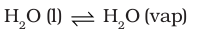
The double half arrows indicate that the processes in both the directions are going on simultaneously. The mixture of reactants and products in the equilibrium state is called an equilibrium mixture.
Equilibrium can be established for both physical processes and chemical reactions. The reaction may be fast or slow depending on the experimental conditions and the nature of the reactants. When the reactants in a closed vessel at a particular temperature react to give products, the concentrations of the reactants keep on decreasing, while those of products keep on increasing for some time after which there is no change in the concentrations of either of the reactants or products. This stage of the system is the dynamic equilibrium and the rates of the forward and reverse reactions become equal. It is due to this dynamic equilibrium stage that there is no change in the concentrations of various species in the reaction mixture. Based on the extent to which the reactions proceed to reach the state of chemical equilibrium, these may be classified in three groups.
(i) The reactions that proceed nearly to completion and only negligible concentrations of the reactants are left. In some cases, it may not be even possible to detect these experimentally.
(ii) The reactions in which only small amounts of products are formed and most of the reactants remain unchanged at equilibrium stage.
(iii) The reactions in which the concentrations of the reactants and products are comparable, when the system is in equilibrium.
The extent of a reaction in equilibrium varies with the experimental conditions such as concentrations of reactants, temperature, etc. Optimisation of the operational conditions is very important in industry and laboratory so that equilibrium is favorable in the direction of the desired product. Some important aspects of equilibrium involving physical and chemical processes are dealt in this unit along with the equilibrium involving ions in aqueous solutions which is called as ionic equilibrium.
7.1 EQUILIBRIUM IN PHYSICAL PROCESSES
The characteristics of system at equilibrium are better understood if we examine some physical processes. The most familiar examples are phase transformation processes, e.g.,
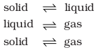
7.1.1 Solid-Liquid Equilibrium
Ice and water kept in a perfectly insulated thermos flask (no exchange of heat between its contents and the surroundings) at 273K and the atmospheric pressure are in equilibrium state and the system shows interesting characteristic features. We observe that the mass of ice and water do not change with time and the temperature remains constant. However, the equilibrium is not static. The intense activity can be noticed at the boundary between ice and water. Molecules from the liquid water collide against ice and adhere to it and some molecules of ice escape into liquid phase. There is no change of mass of ice and water, as the rates of transfer of molecules from ice into water and of reverse transfer from water into ice are equal at atmospheric pressure and 273 K.
It is obvious that ice and water are in equilibrium only at particular temperature and pressure. For any pure substance at atmospheric pressure, the temperature at which the solid and liquid phases are at equilibrium is called the normal melting point or normal freezing point of the substance. The system here is in dynamic equilibrium and we can infer the following:
(i) Both the opposing processes occur simultaneously.
(ii) Both the processes occur at the same rate so that the amount of ice and water remains constant.
7.1.2 Liquid-Vapour Equilibrium
This equilibrium can be better understood if we consider the example of a transparent box carrying a U-tube with mercury (manometer). Drying agent like anhydrous calcium chloride (or phosphorus penta-oxide) is placed for a few hours in the box. After removing the drying agent by tilting the box on one side, a watch glass (or petri dish) containing water is quickly placed inside the box. It will be observed that the mercury level in the right limb of the manometer slowly increases and finally attains a constant value, that is, the pressure inside the box increases and reaches a constant value. Also the volume of water in the watch glass decreases (Fig. 7.1). Initially there was no water vapour (or very less) inside the box. As water evaporated the pressure in the box increased due to addition of water molecules into the gaseous phase inside the box.
Fig.7.1 Measuring equilibrium vapour pressure of water at a constant temperature
The rate of evaporation is constant. However, the rate of increase in pressure decreases with time due to condensation of vapour into water. Finally it leads to an equilibrium condition when there is no net evaporation. This implies that the number of water molecules from the gaseous state into the liquid state also increases till the equilibrium is attained i.e.,
rate of evaporation= rate of condensation
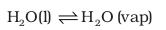
At equilibrium the pressure exerted by the water molecules at a given temperature remains constant and is called the equilibrium vapour pressure of water (or just vapour pressure of water); vapour pressure of water increases with temperature. If the above experiment is repeated with methyl alcohol, acetone and ether, it is observed that different liquids have different equilibrium vapour pressures at the same temperature, and the liquid which has a higher vapour pressure is more volatile and has a lower boiling point.
If we expose three watch glasses containing separately 1mL each of acetone, ethyl alcohol, and water to atmosphere and repeat the experiment with different volumes of the liquids in a warmer room, it is observed that in all such cases the liquid eventually disappears and the time taken for complete evaporation depends on (i) the nature of the liquid, (ii) the amount of the liquid and (iii) the temperature. When the watch glass is open to the atmosphere, the rate of evaporation remains constant but the molecules are dispersed into large volume of the room. As a consequence the rate of condensation from vapour to liquid state is much less than the rate of evaporation. These are open systems and it is not possible to reach equilibrium in an open system.
Water and water vapour are in equilibrium position at atmospheric pressure (1.013 bar) and at 100°C in a closed vessel. The boiling point of water is 100°C at 1.013 bar pressure. For any pure liquid at one atmospheric pressure (1.013 bar), the temperature at which the liquid and vapours are at equilibrium is called normal boiling point of the liquid. Boiling point of the liquid depends on the atmospheric pressure. It depends on the altitude of the place; at high altitude the boiling point decreases.
7.1.3 Solid – Vapour Equilibrium
Let us now consider the systems where solids sublime to vapour phase. If we place solid iodine in a closed vessel, after sometime the vessel gets filled up with violet vapour and the intensity of colour increases with time. After certain time the intensity of colour becomes constant and at this stage equilibrium is attained. Hence solid iodine sublimes to give iodine vapour and the iodine vapour condenses to give solid iodine. The equilibrium can be represented as,
I2(solid) 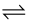 I2 (vapour)
Other examples showing this kind of equilibrium are,
Camphor (solid) Camphor (vapour)
NH4Cl (solid) NH4Cl (vapour)
7.1.4 Equilibrium Involving Dissolution of Solid or Gases in Liquids
Solids in liquids
We know from our experience that we can dissolve only a limited amount of salt or sugar in a given amount of water at room temperature. If we make a thick sugar syrup solution by dissolving sugar at a higher temperature, sugar crystals separate out if we cool the syrup to the room temperature. We call it a saturated solution when no more of solute can be dissolved in it at a given temperature. The concentration of the solute in a saturated solution depends upon the temperature. In a saturated solution, a dynamic equilibrium exits between the solute molecules in the solid state and in the solution:
Sugar (solution)Sugar (solid), and
the rate of dissolution of sugar = rate of crystallisation of sugar.
Equality of the two rates and dynamic nature of equilibrium has been confirmed with the help of radioactive sugar. If we drop some radioactive sugar into saturated solution of non-radioactive sugar, then after some time radioactivity is observed both in the solution and in the solid sugar. Initially there were no radioactive sugar molecules in the solution but due to dynamic nature of equilibrium, there is exchange between the radioactive and non-radioactive sugar molecules between the two phases. The ratio of the radioactive to non-radioactive molecules in the solution increases till it attains a constant value.
Gases in liquids
When a soda water bottle is opened, some of the carbon dioxide gas dissolved in it fizzes out rapidly. The phenomenon arises due to difference in solubility of carbon dioxide at different pressures. There is equilibrium between the molecules in the gaseous state and the molecules dissolved in the liquid under pressure i.e.,
CO2(gas) CO2(in solution)
This equilibrium is governed by Henry’s law, which states that the mass of a gas dissolved in a given mass of a solvent at any temperature is proportional to the pressure of the gas above the solvent. This amount decreases with increase of temperature. The soda water bottle is sealed under pressure of gas when its solubility in water is high. As soon as the bottle is opened, some of the dissolved carbon dioxide gas escapes to reach a new equilibrium condition required for the lower pressure, namely its partial pressure in the atmosphere. This is how the soda water in bottle when left open to the air for some time, turns ‘flat’. It can be generalised that:
(i) For solidliquid equilibrium, there is only one temperature (melting point) at
1 atm (1.013 bar) at which the two phases can coexist. If there is no exchange of heat with the surroundings, the mass of the two phases remains constant.
(ii) For liquid vapour equilibrium, the vapour pressure is constant at a given temperature.
(iii) For dissolution of solids in liquids, the solubility is constant at a given temperature.
Table 7.1 Some Features of Physical Equilibria
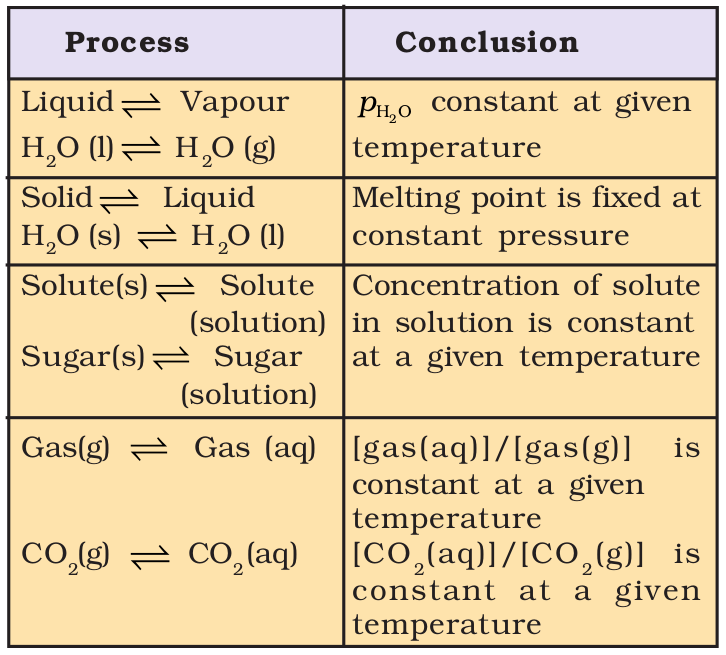
(iv) For dissolution of gases in liquids, the concentration of a gas in liquid is proportional to the pressure (concentration) of the gas over the liquid. These observations are summarised in Table 7.1
7.1.5 General Characteristics of Equilibria Involving Physical Processes
For the physical processes discussed above, following characteristics are common to the system at equilibrium:
(i) Equilibrium is possible only in a closed system at a given temperature.
(ii) Both the opposing processes occur at the same rate and there is a dynamic but stable condition.
(iii) All measurable properties of the system remain constant.
(iv) When equilibrium is attained for a physical process, it is characterised by constant value of one of its parameters at a given temperature. Table 7.1 lists such quantities.
(v) The magnitude of such quantities at any stage indicates the extent to which the physical process has proceeded before reaching equilibrium.
7.2 EQUILIBRIUM IN CHEMICAL PROCESSES – DYNAMIC EQUILIBRIUM
Analogous to the physical systems chemical reactions also attain a state of equilibrium. These reactions can occur both in forward and backward directions. When the rates of the forward and reverse reactions become equal, the concentrations of the reactants and the products remain constant. This is the stage of chemical equilibrium. This equilibrium is dynamic in nature as it consists of a forward reaction in which the reactants give product(s) and reverse reaction in which product(s) gives the original reactants.
For a better comprehension, let us consider a general case of a reversible reaction,
A + B C + D
With passage of time, there is accumulation of the products C and D and depletion of the reactants A and B (Fig. 7.2). This leads to a decrease in the rate of forward reaction and an increase in he rate of the reverse reaction,

Fig. 7.2 Attainment of chemical equilibrium.
Eventually, the two reactions occur at the same rate and the system reaches a state of equilibrium.
Similarly, the reaction can reach the state of equilibrium even if we start with only C and D; that is, no A and B being present initially, as the equilibrium can be reached from either direction.
The dynamic nature of chemical equilibrium can be demonstrated in the synthesis of ammonia by Haber’s process. In a series of experiments, Haber started with known amounts of dinitrogen and dihydrogen maintained at high temperature and pressure and at regular intervals determined the amount of ammonia present. He was successful in determining also the concentration of unreacted dihydrogen and dinitrogen. Fig. 7.4 (page 191) shows that after a certain time the composition of the mixture remains the same even though some of the reactants are still present. This constancy in composition indicates that the reaction has reached equilibrium. In order to understand the dynamic nature of the reaction, synthesis of ammonia is carried out with exactly the same starting conditions (of partial pressure and temperature) but using D2 (deuterium) in place of H2. The reaction mixtures starting either with H2 or D2 reach equilibrium with the same composition, except that D2 and ND3 are present instead of H2 and NH3. After equilibrium is attained, these two mixtures (H2, N2, NH3 and D2, N2, ND3) are mixed together and left for a while.
Dynamic Equilibrium – A Student’s Activity
Equilibrium whether in a physical or in a chemical system, is always of dynamic nature. This can be demonstrated by the use of radioactive isotopes. This is not feasible in a school laboratory. However this concept can be easily comprehended by performing the following activity. The activity can be performed in a group of 5 or 6 students.
Take two 100mL measuring cylinders (marked as 1 and 2) and two glass tubes each of 30 cm length. Diameter of the tubes may be same or different in the range of 3-5mm. Fill nearly half of the measuring cylinder-1 with coloured water (for this purpose add a crystal of potassium permanganate to water) and keep second cylinder (number 2) empty.
Put one tube in cylinder 1 and second in cylinder 2. Immerse one tube in cylinder 1, close its upper tip with a finger and transfer the coloured water contained in its lower portion to cylinder 2. Using second tube, kept in 2nd cylinder, transfer the coloured water in a similar manner from cylinder 2 to cylinder 1. In this way keep on transferring coloured water using the two glass tubes from cylinder 1 to 2 and from 2 to 1 till you notice that the level of coloured water in both the cylinders becomes constant.
If you continue intertransferring coloured solution between the cylinders, there will not be any further change in the levels of coloured water in two cylinders. If we take analogy of ‘level’ of coloured water with ‘concentration’ of reactants and products in the two cylinders, we can say the process of transfer, which continues even after the constancy of level, is indicative of dynamic nature of the process. If we repeat the experiment taking two tubes of different diameters we find that at equilibrium the level of coloured water in two cylinders is different. How far diameters are responsible for change in levels in two cylinders? Empty cylinder (2) is an indicator of no product in it at the beginning.
Fig.7.3 Demonstrating dynamic nature of equilibrium. (a) initial stage (b) final stage after the equilibrium is attained.
Fig 7.4 Depiction of equilibrium for the reaction

Later, when this mixture is analysed, it is found that the concentration of ammonia is just the same as before. However, when this mixture is analysed by a mass spectrometer, it is found that ammonia and all deuterium containing forms of ammonia (NH3, NH2D, NHD2 and ND3) and dihydrogen and its deutrated forms (H2, HD and D2) are present. Thus one can conclude that scrambling of H and D atoms in the molecules must result from a continuation of the forward and reverse reactions in the mixture. If the reaction had simply stopped when they reached equilibrium, then there would have been no mixing of isotopes in this way.
Use of isotope (deuterium) in the formation of ammonia clearly indicates that chemical reactions reach a state of dynamic equilibrium in which the rates of forward and reverse reactions are equal and there is no net change in composition.
Equilibrium can be attained from both sides, whether we start reaction by taking, H2(g) and N2(g) and get NH3(g) or by taking NH3(g) and decomposing it into N2(g) and H2(g).
N2(g) + 3H2(g) 2NH3(g)
2NH3(g) N2(g) + 3H2(g)
Similarly let us consider the reaction,
H2(g) + I2(g) 2HI(g). If we start with equal initial concentration of H2 and I2, the reaction proceeds in the forward direction and the concentration of H2 and I2 decreases while that of HI increases, until all of these become constant at equilibrium (Fig. 7.5). We can also start with HI alone and make the reaction to proceed in the reverse direction; the concentration of HI will decrease and concentration of H2 and I2 will increase until they all become constant when equilibrium is reached (Fig.7.5). If total number of H and I atoms are same in a given volume, the same equilibrium mixture is obtained whether we start it from pure reactants or pure product.
Fig.7.5 Chemical equilibrium in the reaction H2(g) + I2(g) 2HI(g) can be attained from either direction
7.3 LAW OF CHEMICAL EQUILIBRIUM AND EQUILIBRIUM CONSTANT
A mixture of reactants and products in the equilibrium state is called an equilibrium mixture. In this section we shall address a number of important questions about the composition of equilibrium mixtures: What is the relationship between the concentrations of reactants and products in an equilibrium mixture? How can we determine equilibrium concentrations from initial concentrations? What factors can be exploited to alter the composition of an equilibrium mixture? The last question in particular is important when choosing conditions for synthesis of industrial chemicals such as H2, NH3, CaO etc.
To answer these questions, let us consider a general reversible reaction:
A + B C + D
where A and B are the reactants, C and D are the products in the balanced chemical equation. On the basis of experimental studies of many reversible reactions, the Norwegian chemists Cato Maximillian Guldberg and Peter Waage proposed in 1864 that the concentrations in an equilibrium mixture are related by the following equilibrium equation,
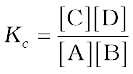 (7.1) where Kc is the equilibrium constant and the expression on the right side is called the equilibrium constant expression.
The equilibrium equation is also known as the law of mass action because in the early days of chemistry, concentration was called “active mass”. In order to appreciate their work better, let us consider reaction between gaseous H2 and I2 carried out in a sealed vessel at 731K.
H2(g) + I2(g) 2HI(g)
1 mol 1 mol 2 mol
Six sets of experiments with varying initial conditions were performed, starting with only gaseous H2 and I2 in a sealed reaction vessel in first four experiments (1, 2, 3 and 4) and only HI in other two experiments (5 and 6). Experiment 1, 2, 3 and 4 were performed taking different concentrations of H2 and / or I2, and with time it was observed that intensity of the purple colour remained constant and equilibrium was attained. Similarly, for experiments 5 and 6, the equilibrium was attained from the opposite direction.
Data obtained from all six sets of experiments are given in Table 7.2.
It is evident from the experiments 1, 2, 3 and 4 that number of moles of dihydrogen reacted = number of moles of iodine reacted = ½ (number of moles of HI formed). Also, experiments 5 and 6 indicate that,
[H2(g)]eq = [I2(g)]eq
Knowing the above facts, in order to establish a relationship between concentrations of the reactants and products, several combinations can be tried. Let us consider the simple expression,
[HI(g)]eq / [H2(g)]eq [I2(g)]eq
It can be seen from Table 7.3 that if we put the equilibrium concentrations of the reactants and products, the above expression is far from constant.
Table 7.2 Initial and Equilibrium Concentrations of H2, I2 and HI
Table 7.3 Expression Involving the Equilibrium Concentration of Reactants
H2(g) + I2(g)  2HI(g)
2HI(g)
However, if we consider the expression,
[HI(g)]2eq / [H2(g)]eq [I2(g)]eq
we find that this expression gives constant value (as shown in Table 7.3) in all the six cases. It can be seen that in this expression the power of the concentration for reactants and products are actually the stoichiometric coefficients in the equation for the chemical reaction. Thus, for the reaction H2(g) + I2(g) 2HI(g), following equation 7.1, the equilibrium constant Kc is written as,
Kc = [HI(g)]eq2 / [H2(g)]eq [I2(g)]eq (7.2)
Generally the subscript ‘eq’ (used for equilibrium) is omitted from the concentration terms. It is taken for granted that the concentrations in the expression for Kc are equilibrium values. We, therefore, write,
Kc = [HI(g)]2 / [H2(g)] [I2(g)] (7.3)
The subscript ‘c’ indicates that Kc is expressed in concentrations of mol L–1.
At a given temperature, the product of concentrations of the reaction products raised to the respective stoichiometric coefficient in the balanced chemical equation divided by the product of concentrations of the reactants raised to their individual stoichiometric coefficients has a constant value. This is known as the Equilibrium Law or Law of Chemical Equilibrium.
The equilibrium constant for a general reaction,
a A + b B c C + d D
is expressed as,
Kc = [C]c[D]d / [A]a[B]b (7.4)
where [A], [B], [C] and [D] are the equilibrium concentrations of the reactants and products.
Equilibrium constant for the reaction,
4NH3(g) + 5O2(g) 4NO(g) + 6H2O(g) is written as
Kc = [NO]4[H2O]6 / [NH3]4 [O2]5
Molar concentration of different species is indicated by enclosing these in square bracket and, as mentioned above, it is implied that these are equilibrium concentrations. While writing expression for equilibrium constant, symbol for phases (s, l, g) are generally ignored.
Let us write equilibrium constant for the reaction, H2(g) + I2(g)  2HI(g) (7.5)
2HI(g) (7.5)
as, Kc = [HI]2 / [H2] [I2] = x (7.6)
The equilibrium constant for the reverse reaction, 2HI(g)  H2(g) + I2(g), at the same temperature is,
H2(g) + I2(g), at the same temperature is,
K′c = [H2] [I2] / [HI]2 = 1/ x = 1 / Kc (7.7)
Thus, K′c = 1 / Kc (7.8)
Equilibrium constant for the reverse reaction is the inverse of the equilibrium constant for the reaction in the forward direction.
If we change the stoichiometric coefficients in a chemical equation by multiplying throughout by a factor then we must make sure that the expression for equilibrium constant also reflects that change. For example, if the reaction (7.5) is written as,
½ H2(g) + ½ I2(g) HI(g) (7.9)
the equilibrium constant for the above reaction is given by
K″c = [HI] / [H2]1/2[I2]1/2 = {[HI]2 / [H2][I2]}1/2
= x1/2 = Kc1/2 (7.10)
On multiplying the equation (7.5) by n, we get
nH2(g) + nI2(g) 2nHI(g) (7.11)
Therefore, equilibrium constant for the reaction is equal to Kc n. These findings are summarised in Table 7.4. It should be noted that because the equilibrium constants Kc and K′c have different numerical values, it is important to specify the form of the balanced chemical equation when quoting the value of an equilibrium constant.
Table 7.4 Relations between Equilibrium Constants for a General Reaction and its Multiples.
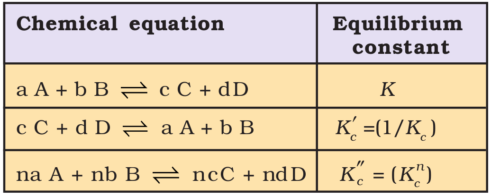
Problem 7.1
The following concentrations were obtained for the formation of NH3 from N2 and H2 at equilibrium at 500K.
[N2] = 1.5 × 10–2M. [H2] = 3.0 ×10–2 M and [NH3] = 1.2 ×10–2M. Calculate equilibrium constant.
Solution
The equilibrium constant for the reaction,
N2(g) + 3H2(g)  2NH3(g) can be written as,
2NH3(g) can be written as,
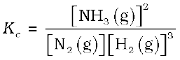
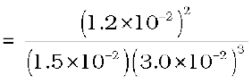
= 0.106 × 104 = 1.06 × 103
Problem 7.2
At equilibrium, the concentrations of N2=3.0 × 10–3M, O2 = 4.2 × 10–3M and
NO= 2.8 × 10–3M in a sealed vessel at 800K. What will be Kc for the reaction
N2(g) + O2(g)  2NO(g)
2NO(g)
Solution
For the reaction equilibrium constant, Kc can be written as,
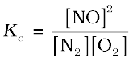
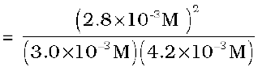
= 0.622
7.4 HOMOGENEOUS EQUILIBRIA
In a homogeneous system, all the reactants and products are in the same phase. For example, in the gaseous reaction,
N2(g) + 3H2(g) 2NH3(g), reactants and products are in the homogeneous phase. Similarly, for the reactions,
CH3COOC2H5 (aq) + H2O (l) CH3COOH (aq) + C2H5OH (aq)
and, Fe3+ (aq) + SCN–(aq) Fe(SCN)2+ (aq)
all the reactants and products are in homogeneous solution phase. We shall now consider equilibrium constant for some homogeneous reactions.
7.4.1 Equilibrium Constant in Gaseous Systems
So far we have expressed equilibrium constant of the reactions in terms of molar concentration of the reactants and products, and used symbol, Kc for it. For reactions involving gases, however, it is usually more convenient to express the equilibrium constant in terms of partial pressure.
The ideal gas equation is written as,
pV = nRT
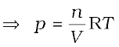
Here, p is the pressure in Pa, n is the number of moles of the gas, V is the volume in m3 and T is the temperature in Kelvin
Therefore,
n/V is concentration expressed in mol/m3
If concentration c, is in mol/L or mol/dm3, and p is in bar then
p = cRT,
We can also write p = [gas]RT.
Here, R= 0.0831 bar litre/mol K
At constant temperature, the pressure of the gas is proportional to its concentration i.e.,
p ∝ [gas]
For reaction in equilibrium
H2(g) + I2(g) 2HI(g)
We can write either
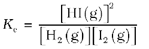
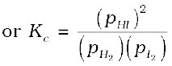 (7.12)
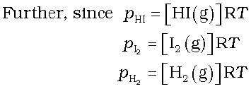
Therefore,
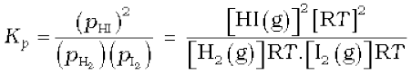
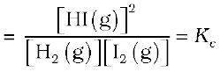 (7.13)
In this example, Kp = Kc i.e., both equilibrium constants are equal. However, this is not always the case. For example in reaction
N2(g) + 3H2(g) 2NH3(g)
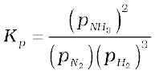
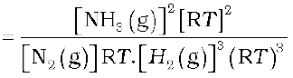
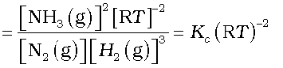
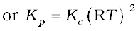 (7.14)
Similarly, for a general reaction
a A + b B c C + d D
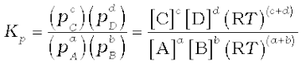

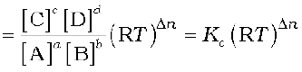 (7.15)
where ∆n = (number of moles of gaseous products) – (number of moles of gaseous reactants) in the balanced chemical equation.
It is necessary that while calculating the value of Kp, pressure should be expressed in bar because standard state for pressure is 1 bar. We know from Unit 1 that :
1pascal, Pa=1Nm–2, and 1bar = 105 Pa
Kp values for a few selected reactions at different temperatures are given in Table 7.5
Table 7.5 Equilibrium Constants, Kp for a Few Selected Reactions

Problem 7.3
PCl5, PCl3 and Cl2 are at equilibrium at 500 K and having concentration 1.59M PCl3, 1.59M Cl2 and 1.41 M PCl5. Calculate Kc for the reaction,
PCl5 PCl3 + Cl2
Solution
The equilibrium constant Kc for the above reaction can be written as,
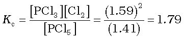
Problem 7.4
The value of Kc = 4.24 at 800K for the reaction,
CO (g) + H2O (g) CO2 (g) + H2 (g)
Calculate equilibrium concentrations of CO2, H2, CO and H2O at 800 K, if only CO and H2O are present initially at concentrations of 0.10M each.
Solution
For the reaction,
CO (g) + H2O (g) CO2 (g) + H2 (g)
Initial concentration:
0.1M 0.1M 0 0
Let x mole per litre of each of the product be formed.
At equilibrium:
(0.1-x) M (0.1-x) M x M x M
where x is the amount of CO2 and H2 at equilibrium.
Hence, equilibrium constant can be written as,
Kc = x2/(0.1-x)2 = 4.24
x2 = 4.24(0.01 + x2-0.2x)
x2 = 0.0424 + 4.24x2-0.848x
3.24x2 – 0.848x + 0.0424 = 0
a = 3.24, b = – 0.848, c = 0.0424
(for quadratic equation ax2 + bx + c = 0,
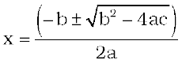
x = 0.848±√(0.848)2– 4(3.24)(0.0424)/
(3.24×2)
x = (0.848 ± 0.4118)/ 6.48
x1 = (0.848 – 0.4118)/6.48 = 0.067
x2 = (0.848 + 0.4118)/6.48 = 0.194
the value 0.194 should be neglected because it will give concentration of the reactant which is more than initial concentration.
Hence the equilibrium concentrations are,
[CO2] = [H2-] = x = 0.067 M
[CO] = [H2O] = 0.1 – 0.067 = 0.033 M
Problem 7.5
For the equilibrium,
2NOCl(g)  2NO(g) + Cl2(g)
2NO(g) + Cl2(g)
the value of the equilibrium constant, Kc is 3.75 × 10–6 at 1069 K. Calculate the Kp for the reaction at this temperature?
Solution
We know that,
Kp = Kc(RT)∆n
For the above reaction,
∆n = (2+1) – 2 = 1
Kp = 3.75 ×10–6 (0.0831 × 1069)
Kp = 0.033
7.5 HETEROGENEOUS EQUILIBRIA
Equilibrium in a system having more than one phase is called heterogeneous equilibrium. The equilibrium between water vapour and liquid water in a closed container is an example of heterogeneous equilibrium.
H2O(l) H2O(g)
In this example, there is a gas phase and a liquid phase. In the same way, equilibrium between a solid and its saturated solution,
Ca(OH)2 (s) + (aq) Ca2+ (aq) + 2OH–(aq)
is a heterogeneous equilibrium.
Heterogeneous equilibria often involve pure solids or liquids. We can simplify equilibrium expressions for the heterogeneous equilibria involving a pure liquid or a pure solid, as the molar concentration of a pure solid or liquid is constant (i.e., independent of the amount present). In other words if a substance ‘X’ is involved, then [X(s)] and [X(l)] are constant, whatever the amount of ‘X’ is taken. Contrary to this, [X(g)] and [X(aq)] will vary as the amount of X in a given volume varies. Let us take thermal dissociation of calcium carbonate which is an interesting and important example of heterogeneous chemical equilibrium.
CaCO3 (s) 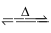 CaO (s) + CO2 (g) (7.16)
On the basis of the stoichiometric equation, we can write,
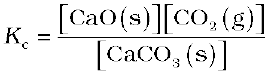
Units of Equilibrium Constant
The value of equilibrium constant Kc can be calculated by substituting the concentration terms in mol/L and for Kp partial pressure is substituted in Pa, kPa, bar or atm. This results in units of equilibrium constant based on molarity or pressure, unless the exponents of both the numerator and denominator are same.
For the reactions,
H2(g) + I2(g) 2HI, Kc and Kp have no unit.
N2O4(g) 2NO2 (g), Kc has unit mol/L and Kp has unit bar
Equilibrium constants can also be expressed as dimensionless quantities if the standard state of reactants and products are specified. For a pure gas, the standard state is 1bar. Therefore a pressure of 4 bar in standard state can be expressed as 4 bar/1 bar = 4, which is a dimensionless number. Standard state (c0) for a solute is 1 molar solution and all concentrations can be measured with respect to it. The numerical value of equilibrium constant depends on the standard state chosen. Thus, in this system both Kp and Kc are dimensionless quantities but have different numerical values due to different standard states.
Since [CaCO3(s)] and [CaO(s)] are both constant, therefore modified equilibrium constant for the thermal decomposition of calcium carbonate will be
K´c = [CO2(g)] (7.17)
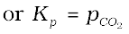 (7.18)
This shows that at a particular temperature, there is a constant concentration or pressure of CO2 in equilibrium with CaO(s) and CaCO3(s). Experimentally it has been found that at 1100 K, the pressure of CO2 in equilibrium with CaCO3(s) and CaO(s), is
2.0 ×105 Pa. Therefore, equilibrium constant at 1100K for the above reaction is:

Similarly, in the equilibrium between nickel, carbon monoxide and nickel carbonyl (used in the purification of nickel),
Ni (s) + 4 CO (g)  Ni(CO)4 (g),
Ni(CO)4 (g),
the equilibrium constant is written as
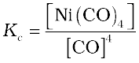
It must be remembered that for the existence of heterogeneous equilibrium pure solids or liquids must also be present (however small the amount may be) at equilibrium, but their concentrations or partial pressures do not appear in the expression of the equilibrium constant. In the reaction,
Ag2O(s) + 2HNO3(aq)  2AgNO3(aq) +H2O(l)
2AgNO3(aq) +H2O(l)
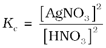
Problem 7.6
The value of Kp for the reaction,
CO2 (g) + C (s)  2CO (g)
2CO (g)
is 3.0 at 1000 K. If initially 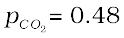bar and  = 0 bar and pure graphite is present, calculate the equilibrium partial pressures of CO and CO2.
= 0 bar and pure graphite is present, calculate the equilibrium partial pressures of CO and CO2.
Solution
For the reaction,
let ‘x’ be the decrease in pressure of CO2, then
CO2(g) + C(s) 2CO(g)
Initial pressure: 0.48 bar 0
At equilibrium:
(0.48 – x)bar 2x bar
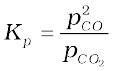
Kp = (2x)2/(0.48 – x) = 3
4x2 = 3(0.48 – x)
4x2 = 1.44 – x
4x2 + 3x – 1.44 = 0
a = 4, b = 3, c = –1.44
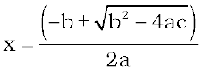
= [–3 ± √(3)2– 4(4)(–1.44)]/2 × 4
= (–3 ± 5.66)/8
= (–3 + 5.66)/ 8 (as value of x cannot be negative hence we neglect that value)
x = 2.66/8 = 0.33
The equilibrium partial pressures are,
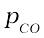= 2x = 2 × 0.33 = 0.66 bar
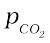= 0.48 – x = 0.48 – 0.33 = 0.15 bar
7.6 APPLICATIONS OF EQUILIBRIUM CONSTANTS
Before considering the applications of equilibrium constants, let us summarise the important features of equilibrium constants as follows:
1. Expression for equilibrium constant is applicable only when concentrations of the reactants and products have attained constant value at equilibrium state.
2. The value of equilibrium constant is independent of initial concentrations of the reactants and products.
3. Equilibrium constant is temperature dependent having one unique value for a particular reaction represented by a balanced equation at a given temperature.
4. The equilibrium constant for the reverse reaction is equal to the inverse of the equilibrium constant for the forward reaction.
5. The equilibrium constant K for a reaction is related to the equilibrium constant of the corresponding reaction, whose equation is obtained by multiplying or dividing the equation for the original reaction by a small integer.
Let us consider applications of equilibrium constant to:
• predict the extent of a reaction on the basis of its magnitude,
• predict the direction of the reaction, and
• calculate equilibrium concentrations.
7.6.1 Predicting the Extent of a Reaction
The numerical value of the equilibrium constant for a reaction indicates the extent of the reaction. But it is important to note that an equilibrium constant does not give any information about the rate at which the equilibrium is reached. The magnitude of Kc or Kp is directly proportional to the concentrations of products (as these appear in the numerator of equilibrium constant expression) and inversely proportional to the concentrations of the reactants (these appear in the denominator). This implies that a high value of K is suggestive of a high concentration of products and vice-versa.
We can make the following generalisations concerning the composition of equilibrium mixtures:
• If Kc > 103, products predominate over reactants, i.e., if Kc is very large, the reaction proceeds nearly to completion. Consider the following examples:
(a) The reaction of H2 with O2 at 500 K has a very large equilibrium constant,
Kc = 2.4 × 1047.
(b) H2(g) + Cl2(g) 2HCl(g) at 300K has
Kc = 4.0 × 1031.
(c) H2(g) + Br2(g) 2HBr (g) at 300 K,
Kc = 5.4 × 1018
• If Kc < 10–3, reactants predominate over products, i.e., if Kc is very small, the reaction proceeds rarely. Consider the following examples:
(a) The decomposition of H2O into H2 and O2 at 500 K has a very small equilibrium constant, Kc = 4.1 × 10–48
(b) N2(g) + O2(g) 2NO(g),
at 298 K has Kc = 4.8 ×10–31.
• If Kc is in the range of 10–3 to 103, appreciable concentrations of both reactants and products are present. Consider the following examples:
(a) For reaction of H2 with I2 to give HI,
Kc = 57.0 at 700K.
(b) Also, gas phase decomposition of N2O4 to NO2 is another reaction with a value of Kc = 4.64 × 10–3 at 25°C which is neither too small nor too large. Hence, equilibrium mixtures contain appreciable concentrations of both N2O4 and NO2.
These generarlisations are illustrated in Fig. 7.6
Fig.7.6 Dependence of extent of reaction on Kc
7.6.2 Predicting the Direction of the Reaction
The equilibrium constant helps in predicting the direction in which a given reaction will proceed at any stage. For this purpose, we calculate the reaction quotient Q. The reaction quotient, Q (Qc with molar concentrations and QP with partial pressures) is defined in the same way as the equilibrium constant Kc except that the concentrations in Qc are not necessarily equilibrium values.
For a general reaction:
a A + b B c C + d D (7.19)
Qc = [C]c[D]d / [A]a[B]b (7.20)
Then,
If Qc > Kc, the reaction will proceed in the direction of reactants (reverse reaction).
If Qc < Kc, the reaction will proceed in the direction of the products (forward reaction).
If Qc = Kc, the reaction mixture is already at equilibrium.
Consider the gaseous reaction of H2
with I2,
H2(g) + I2(g) 2HI(g); Kc = 57.0 at 700 K.
Suppose we have molar concentrations [H2]t=0.10M, [I2]t = 0.20 M and [HI]t = 0.40 M.
(the subscript t on the concentration symbols means that the concentrations were measured at some arbitrary time t, not necessarily at equilibrium).
Thus, the reaction quotient, Qc at this stage of the reaction is given by,
Qc = [HI]t2 / [H2]t [I2]t = (0.40)2/ (0.10)×(0.20)
= 8.0
Now, in this case, Qc (8.0) does not equal Kc (57.0), so the mixture of H2(g), I2(g) and HI(g) is not at equilibrium; that is, more H2(g) and I2(g) will react to form more HI(g) and their concentrations will decrease till Qc = Kc.
The reaction quotient, Qc is useful in predicting the direction of reaction by comparing the values of Qc and Kc.
Thus, we can make the following generalisations concerning the direction of the reaction (Fig. 7.7) :
Fig. 7.7 Predicting the direction of the reaction
• If Qc < Kc, net reaction goes from left to right
• If Qc > Kc, net reaction goes from right to left.
• If Qc = Kc, no net reaction occurs.
Problem 7.7
The value of Kc for the reaction
2A B + C is 2 × 10–3. At a given time, the composition of reaction mixture is
[A] = [B] = [C] = 3 × 10–4 M. In which direction the reaction will proceed?
Solution
For the reaction the reaction quotient Qc is given by,
Qc = [B][C]/ [A]2
as [A] = [B] = [C] = 3 × 10–4M
Qc = (3 ×10–4)(3 × 10–4) / (3 ×10–4)2 = 1
as Qc > Kc so the reaction will proceed in the reverse direction.
7.6.3 Calculating Equilibrium Concentrations
In case of a problem in which we know the initial concentrations but do not know any of the equilibrium concentrations, the following three steps shall be followed:
Step 1. Write the balanced equation for the reaction.
Step 2. Under the balanced equation, make a table that lists for each substance involved in the reaction:
(a) the initial concentration,
(b) the change in concentration on going to equilibrium, and
(c) the equilibrium concentration.
In constructing the table, define x as the concentration (mol/L) of one of the substances that reacts on going to equilibrium, then use the stoichiometry of the reaction to determine the concentrations of the other substances in terms of x.
Step 3. Substitute the equilibrium concentrations into the equilibrium equation for the reaction and solve for x. If you are to solve a quadratic equation choose the mathematical solution that makes chemical sense.
Step 4. Calculate the equilibrium concentrations from the calculated value of x.
Step 5. Check your results by substituting them into the equilibrium equation.
Problem 7.8
13.8g of N2O4 was placed in a 1L reaction vessel at 400K and allowed to attain equilibrium
N2O4 (g) 2NO2 (g)
The total pressure at equilbrium was found to be 9.15 bar. Calculate Kc, Kp and partial pressure at equilibrium.
Solution
We know pV = nRT
Total volume (V ) = 1 L
Molecular mass of N2O4 = 92 g
Number of moles = 13.8g/92 g = 0.15
of the gas (n)
Gas constant (R) = 0.083 bar L mol–1K–1
Temperature (T ) = 400 K
pV = nRT
p × 1L = 0.15 mol × 0.083 bar L mol–1K–1 × 400 K
p = 4.98 bar
N2O4 2NO2
Initial pressure: 4.98 bar 0
At equilibrium: (4.98 – x) bar 2x bar Hence,
ptotal at equilibrium = 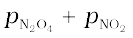
9.15 = (4.98 – x) + 2x
9.15 = 4.98 + x
x = 9.15 – 4.98 = 4.17 bar
Partial pressures at equilibrium are,
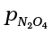= 4.98 – 4.17 = 0.81bar
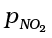 = 2x = 2 × 4.17 = 8.34 bar
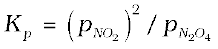
= (8.34)2/0.81 = 85.87
Kp = Kc(RT)∆n
85.87 = Kc(0.083 × 400)1
Kc = 2.586 = 2.6
Problem 7.9
3.00 mol of PCl5 kept in 1L closed reaction vessel was allowed to attain equilibrium at 380K. Calculate composition of the mixture at equilibrium. Kc= 1.80
Solution
PCl5 PCl3 + Cl2
Initial
concentration: 3.0 0 0
Let x mol per litre of PCl5 be dissociated,
At equilibrium:
(3-x) x x
Kc = [PCl3][Cl2]/[PCl5]
1.8 = x2/ (3 – x)
x2 + 1.8x – 5.4 = 0
x = [–1.8 ± √(1.8)2 – 4(–5.4)]/2
x = [–1.8 ± √3.24 + 21.6]/2
x = [–1.8 ± 4.98]/2
x = [–1.8 + 4.98]/2 = 1.59
[PCl5] = 3.0 – x = 3 –1.59 = 1.41 M
[PCl3] = [Cl2] = x = 1.59 M
7.7 Relationship between Equilibrium Constant K, Reaction Quotient Q and
Gibbs Energy G
The value of Kc for a reaction does not depend on the rate of the reaction. However, as you have studied in Unit 6, it is directly related
to the thermodynamics of the reaction and
in particular, to the change in Gibbs energy, ∆G. If,
• ∆G is negative, then the reaction is spontaneous and proceeds in the forward direction.
• ∆G is positive, then reaction is considered non-spontaneous. Instead, as reverse reaction would have a negative ∆G, the products of the forward reaction shall be converted to the reactants.
• ∆G is 0, reaction has achieved equilibrium; at this point, there is no longer any free energy left to drive the reaction.
A mathematical expression of this thermodynamic view of equilibrium can be described by the following equation:
∆G = ∆G + RT lnQ (7.21)
where, G is standard Gibbs energy.
At equilibrium, when ∆G = 0 and Q = Kc, the equation (7.21) becomes,
∆G = ∆G + RT ln K = 0
∆G = – RT lnK (7.22)
lnK = – ∆G / RT
Taking antilog of both sides, we get,
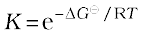 (7.23)
Hence, using the equation (7.23), the reaction spontaneity can be interpreted in terms of the value of ∆G.
• If ∆G < 0, then –∆G/RT is positive, and  >1, making K >1, which implies a spontaneous reaction or the reaction which proceeds in the forward direction to such an extent that the products are present predominantly.
>1, making K >1, which implies a spontaneous reaction or the reaction which proceeds in the forward direction to such an extent that the products are present predominantly.
• If ∆G > 0, then –∆G/RT is negative, and 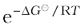< 1, that is , K < 1, which implies a non-spontaneous reaction or a reaction which proceeds in the forward direction to such a small degree that only a very minute quantity of product is formed.
Problem 7.10
The value of ∆G for the phosphorylation of glucose in glycolysis is 13.8 kJ/mol. Find the value of Kc at 298 K.
Solution
∆G = 13.8 kJ/mol = 13.8 × 103J/mol
Also, ∆G = – RT lnKc
Hence, ln Kc = –13.8 × 103J/mol (8.314 J mol–1K–1 × 298 K)
ln Kc = – 5.569
Kc = e–5.569
Kc = 3.81 × 10–3
Problem 7.11
Hydrolysis of sucrose gives,
Sucrose + H2O Glucose + Fructose
Equilibrium constant Kc for the reaction is 2 ×1013 at 300K. Calculate ∆G at 300K.
Solution
∆G = – RT lnKc
∆G = – 8.314J mol–1K–1×
300K × ln(2×1013)
∆G = – 7.64 ×104 J mol–1
7.8 FACTORS AFFECTING EQUILIBRIA
One of the principal goals of chemical synthesis is to maximise the conversion of the reactants to products while minimizing the expenditure of energy. This implies maximum yield of products at mild temperature and pressure conditions. If it does not happen, then the experimental conditions need to be adjusted. For example, in the Haber process for the synthesis of ammonia from N2 and H2, the choice of experimental conditions is of real economic importance. Annual world production of ammonia is about hundred million tones, primarily for use as fertilizers.
Equilibrium constant, Kc is independent of initial concentrations. But if a system at equilibrium is subjected to a change in the concentration of one or more of the reacting substances, then the system is no longer at equilibrium; and net reaction takes place in some direction until the system returns to equilibrium once again. Similarly, a change in temperature or pressure of the system may also alter the equilibrium. In order to decide what course the reaction adopts and make a qualitative prediction about the effect of a change in conditions on equilibrium we use Le Chatelier’s principle. It states that a change in any of the factors that determine the equilibrium conditions of a system will cause the system to change in such a manner so as to reduce or to counteract the effect of the change. This is applicable to all physical and chemical equilibria.
We shall now be discussing factors which can influence the equilibrium.
7.8.1 Effect of Concentration Change
In general, when equilibrium is disturbed by the addition/removal of any reactant/products, Le Chatelier’s principle predicts that:
• The concentration stress of an added reactant/product is relieved by net reaction in the direction that consumes the added substance.
• The concentration stress of a removed reactant/product is relieved by net reaction in the direction that replenishes the removed substance.
or in other words,
“When the concentration of any of the reactants or products in a reaction at equilibrium is changed, the composition of the equilibrium mixture changes so as to minimize the effect of concentration changes”.
Let us take the reaction,
H2(g) + I2(g) 2HI(g)
If H2 is added to the reaction mixture at equilibrium, then the equilibrium of the reaction is disturbed. In order to restore it, the reaction proceeds in a direction wherein H2 is consumed, i.e., more of H2 and I2 react to form HI and finally the equilibrium shifts in right (forward) direction (Fig.7.8). This is in accordance with the Le Chatelier’s principle which implies that in case of addition of a reactant/product, a new equilibrium will be set up in which the concentration of the reactant/product should be less than what it was after the addition but more than what it was in the original mixture.
Fig. 7.8 Effect of addition of H2 on change of concentration for the reactants and products in the reaction, H2(g) + I2 (g) 2HI(g)
The same point can be explained in terms of the reaction quotient, Qc,
Qc = [HI]2/ [H2][I2]
Addition of hydrogen at equilibrium results in value of Qc being less than Kc . Thus, in order to attain equilibrium again reaction moves in the forward direction. Similarly, we can say that removal of a product also boosts the forward reaction and increases the concentration of the products and this has great commercial application in cases of reactions, where the product is a gas or a volatile substance. In case of manufacture of ammonia, ammonia is liquified and removed from the reaction mixture so that reaction keeps moving in forward direction. Similarly, in the large scale production of CaO (used as important building material) from CaCO3, constant removal of CO2 from the kiln drives the reaction to completion. It should be remembered that continuous removal of a product maintains Qc at a value less than Kc and reaction continues to move in the forward direction.
Effect of Concentration – An experiment
This can be demonstrated by the following reaction:
Fe3+(aq)+ SCN–(aq)  [Fe(SCN)]2+(aq) (7.24)
[Fe(SCN)]2+(aq) (7.24)
yellow colourless deep red
(7.25)
A reddish colour appears on adding two drops of 0.002 M potassium thiocynate solution to 1 mL of 0.2 M iron(III) nitrate solution due to the formation of [Fe(SCN)]2+. The intensity of the red colour becomes constant on attaining equilibrium. This equilibrium can be shifted in either forward or reverse directions depending on our choice of adding a reactant or a product. The equilibrium can be shifted in the opposite direction by adding reagents that remove Fe3+ or SCN– ions. For example, oxalic acid (H2C2O4), reacts with Fe3+ ions to form the stable complex ion [Fe(C2O4)3]3–, thus decreasing the concentration of free Fe3+(aq). In accordance with the Le Chatelier’s principle, the concentration stress of removed Fe3+ is relieved by dissociation of [Fe(SCN)]2+ to replenish the Fe3+ ions. Because the concentration of [Fe(SCN)]2+ decreases, the intensity of red colour decreases.
Addition of aq. HgCl2 also decreases red colour because Hg2+ reacts with SCN– ions to form stable complex ion [Hg(SCN)4]2–. Removal of free SCN– (aq) shifts the equilibrium in equation (7.24) from right to left to replenish SCN– ions. Addition of potassium thiocyanate on the other hand increases the colour intensity of the solution as it shift the equilibrium to right.
7.8.2 Effect of Pressure Change
A pressure change obtained by changing the volume can affect the yield of products in case of a gaseous reaction where the total number of moles of gaseous reactants and total number of moles of gaseous products are different. In applying Le Chatelier’s principle to a heterogeneous equilibrium the effect of pressure changes on solids and liquids can be ignored because the volume (and concentration) of a solution/liquid is nearly independent of pressure.
Consider the reaction,
CO(g) + 3H2(g) CH4(g) + H2O(g)
Here, 4 mol of gaseous reactants (CO + 3H2) become 2 mol of gaseous products (CH4 + H2O). Suppose equilibrium mixture (for above reaction) kept in a cylinder fitted with a piston at constant temperature is compressed to one half of its original volume. Then, total pressure will be doubled (according to pV = constant). The partial pressure and therefore, concentration of reactants and products have changed and the mixture is no longer at equilibrium. The direction in which the reaction goes to re-establish equilibrium can be predicted by applying the Le Chatelier’s principle. Since pressure has doubled, the equilibrium now shifts in the forward direction, a direction in which the number of moles of the gas or pressure decreases (we know pressure is proportional to moles of the gas). This can also be understood by using reaction quotient, Qc. Let [CO], [H2], [CH4] and [H2O] be the molar concentrations at equilibrium for methanation reaction. When volume of the reaction mixture is halved, the partial pressure and the concentration are doubled. We obtain the reaction quotient by replacing each equilibrium concentration by double its value.
As Qc < Kc , the reaction proceeds in the forward direction.
In reaction C(s) + CO2(g) 2CO(g), when pressure is increased, the reaction goes in the reverse direction because the number of moles of gas increases in the forward direction.
7.8.3 Effect of Inert Gas Addition
If the volume is kept constant and an inert gas such as argon is added which does not take part in the reaction, the equilibrium remains undisturbed. It is because the addition of an inert gas at constant volume does not change the partial pressures or the molar concentrations of the substance involved in the reaction. The reaction quotient changes only if the added gas is a reactant or product involved in the reaction.
7.8.4 Effect of Temperature Change
Whenever an equilibrium is disturbed by a change in the concentration, pressure or volume, the composition of the equilibrium mixture changes because the reaction quotient, Qc no longer equals the equilibrium constant, Kc. However, when a change in temperature occurs, the value of equilibrium constant, Kc is changed.
In general, the temperature dependence of the equilibrium constant depends on the sign of ∆H for the reaction.
• The equilibrium constant for an exothermic reaction (negative ∆H) decreases as the temperature increases.
• The equilibrium constant for an endothermic reaction (positive ∆H) increases as the temperature increases.
Temperature changes affect the equilibrium constant and rates of reactions.
Production of ammonia according to the reaction,
N2(g) + 3H2(g) 2NH3(g) ;
∆H= – 92.38 kJ mol–1
is an exothermic process. According to Le Chatelier’s principle, raising the temperature shifts the equilibrium to left and decreases the equilibrium concentration of ammonia. In other words, low temperature is favourable for high yield of ammonia, but practically very low temperatures slow down the reaction and thus a catalyst is used.
Effect of Temperature – An experiment
Effect of temperature on equilibrium can be demonstrated by taking NO2 gas (brown in colour) which dimerises into N2O4 gas (colourless).
2NO2(g) N2O4(g); ∆H = –57.2 kJ mol–1
NO2 gas prepared by addition of Cu turnings to conc. HNO3 is collected in two 5 mL test tubes (ensuring same intensity of colour of gas in each tube) and stopper sealed with araldite. Three 250 mL beakers 1, 2 and 3 containing freezing mixture, water at room temperature and hot water (363K), respectively, are taken (Fig. 7.9). Both the test tubes are placed in beaker 2 for 8-10 minutes. After this one is placed in beaker 1 and the other in beaker 3. The effect of temperature on direction of reaction is depicted very well in this experiment. At low temperatures in beaker 1, the forward reaction of formation of N2O4 is preferred, as reaction is exothermic, and thus, intensity of brown colour due to NO2 decreases. While in beaker 3, high temperature favours the reverse reaction of formation of NO2 and thus, the brown colour intensifies.
Fig. 7.9 Effect of temperature on equilibrium for the reaction, 2NO2 (g) N2O4 (g)

Effect of temperature can also be seen in an endothermic reaction,
[Co(H2O)6]3+(aq) + 4Cl–(aq)[CoCl4 ]2–(aq) + 6H2O(l)
pink colourless blue
At room temperature, the equilibrium mixture is blue due to [CoCl4]2–. When cooled in a freezing mixture, the colour of the mixture turns pink due to [Co(H2O)6]3+.
7.8.5 Effect of a Catalyst
A catalyst increases the rate of the chemical reaction by making available a new low energy pathway for the conversion of reactants to products. It increases the rate of forward and reverse reactions that pass through the same transition state and does not affect equilibrium. Catalyst lowers the activation energy for the forward and reverse reactions by exactly the same amount. Catalyst does not affect the equilibrium composition of a reaction mixture. It does not appear in the balanced chemical equation or in the equilibrium constant expression.
Let us consider the formation of NH3 from dinitrogen and dihydrogen which is highly exothermic reaction and proceeds with decrease in total number of moles formed as compared to the reactants. Equilibrium constant decreases with increase in temperature. At low temperature rate decreases and it takes long time to reach at equilibrium, whereas high temperatures give satisfactory rates but poor yields.
German chemist, Fritz Haber discovered that a catalyst consisting of iron catalyse the reaction to occur at a satisfactory rate at temperatures, where the equilibrium concentration of NH3 is reasonably favourable. Since the number of moles formed in the reaction is less than those of reactants, the yield of NH3 can be improved by increasing the pressure.
Optimum conditions of temperature and pressure for the synthesis of NH3 using catalyst are around 500°C and 200 atm.
Similarly, in manufacture of sulphuric acid by contact process,
2SO2(g) + O2(g) 2SO3(g); Kc = 1.7 × 1026
though the value of K is suggestive of reaction going to completion, but practically the oxidation of SO2 to SO3 is very slow. Thus, platinum or divanadium penta-oxide (V2O5) is used as catalyst to increase the rate of the reaction.
Note: If a reaction has an exceedingly small K, a catalyst would be of little help.
7.9 IONIC EQUILIBRIUM IN SOLUTION
Under the effect of change of concentration on the direction of equilibrium, you have incidently come across with the following equilibrium which involves ions:
Fe3+(aq) + SCN–(aq) [Fe(SCN)]2+(aq)
There are numerous equilibria that involve ions only. In the following sections we will study the equilibria involving ions. It is well known that the aqueous solution of sugar does not conduct electricity. However, when common salt (sodium chloride) is added to water it conducts electricity. Also, the conductance of electricity increases with an increase in concentration of common salt. Michael Faraday classified the substances into two categories based on their ability to conduct electricity. One category of substances conduct electricity in their aqueous solutions and are called electrolytes while the other do not and are thus, referred to as non-electrolytes. Faraday further classified electrolytes into strong and weak electrolytes. Strong electrolytes on dissolution in water are ionized almost completely, while the weak electrolytes are only partially dissociated. For example, an aqueous solution of sodium chloride is comprised entirely of sodium ions and chloride ions, while that of acetic acid mainly contains unionized acetic acid molecules and only some acetate ions and hydronium ions. This is because there is almost 100% ionization in case of sodium chloride as compared to less than 5% ionization of acetic acid which is a weak electrolyte. It should be noted that in weak electrolytes, equilibrium is established between ions and the unionized molecules. This type of equilibrium involving ions in aqueous solution is called ionic equilibrium. Acids, bases and salts come under the category of electrolytes and may act as either strong or weak electrolytes.
7.10 ACIDS, BASES AND SALTS
Acids, bases and salts find widespread occurrence in nature. Hydrochloric acid present in the gastric juice is secreted by the lining of our stomach in a significant amount of 1.2-1.5 L/day and is essential for digestive
processes. Acetic acid is known to be the main constituent of vinegar. Lemon and orange juices contain citric and ascorbic acids, and tartaric acid is found in tamarind paste. As most of the acids taste sour, the word “acid” has been derived from a latin word “acidus” meaning sour. Acids are known to turn blue litmus paper into red and liberate dihydrogen on reacting with some metals. Similarly, bases are known to turn red litmus paper blue, taste bitter and feel soapy. A common example of a base is washing soda used for washing purposes. When acids and bases are mixed in the right proportion they react with each other to give salts. Some commonly known examples of salts are sodium chloride, barium sulphate, sodium nitrate. Sodium chloride (common salt ) is an important component of our diet and is formed by reaction between hydrochloric acid and sodium hydroxide. It exists in solid state as a cluster of positively charged sodium ions and negatively charged chloride ions which are held together due to electrostatic interactions between oppositely charged species (Fig.7.10). The electrostatic forces between two charges are inversely proportional to dielectric constant of the medium. Water, a universal solvent, possesses a very high dielectric constant of 80. Thus, when sodium chloride is dissolved in water, the electrostatic interactions are reduced by a factor of 80 and this facilitates the ions to move freely in the solution. Also, they are well-separated due to hydration with water molecules.
Fig.7.10 Dissolution of sodium chloride in water. Na+ and Cl– ions are stablised by their hydration with polar water molecules.
Michael Faraday
(1791–1867)
Faraday was born near London into a family of very limited means. At the age of 14 he was an apprentice to a kind bookbinder who allowed Faraday to read the books he was binding. Through a fortunate chance he became laboratory assistant to Davy, and during 1813-4, Faraday accompanied him to the Continent. During this trip he gained much from the experience of coming into contact with many of the leading scientists of the time. In 1825, he succeeded Davy as Director of the Royal Institution laboratories, and in 1833 he also became the first Fullerian Professor of Chemistry. Faraday’s first important work was on analytical chemistry. After 1821 much of his work was on electricity and magnetism and different electromagnetic phenomena. His ideas have led to the establishment of modern field theory. He discovered his two laws of electrolysis in 1834. Faraday was a very modest and kind hearted person. He declined all honours and avoided scientific controversies. He preferred to work alone and never had any assistant. He disseminated science in a variety of ways including his Friday evening discourses, which he founded at the Royal Institution. He has been very famous for his Christmas lecture on the ‘Chemical History of a Candle’. He published nearly 450 scientific papers.
Comparing, the ionization of hydrochloric acid with that of acetic acid in water we find that though both of them are polar covalent molecules, former is completely ionized into its constituent ions, while the latter is only partially ionized (< 5%). The extent to which ionization occurs depends upon the strength of the bond and the extent of solvation of ions produced. The terms dissociation and ionization have earlier been used with different meaning. Dissociation refers to the process of separation of ions in water already existing as such in the solid state of the solute, as in sodium chloride. On the other hand, ionization corresponds to a process in which a neutral molecule splits into charged ions in the solution. Here, we shall not distinguish between the two and use the two terms interchangeably.
7.10.1 Arrhenius Concept of Acids and Bases
According to Arrhenius theory, acids are substances that dissociates in water to give hydrogen ions H+(aq) and bases are substances that produce hydroxyl ions
OH–(aq). The ionization of an acid HX (aq) can be represented by the following equations:
HX (aq) → H+(aq) + X– (aq)
or
HX(aq) + H2O(l) → H3O+(aq) + X –(aq)
A bare proton, H+ is very reactive and cannot exist freely in aqueous solutions. Thus, it bonds to the oxygen atom of a solvent water molecule to give trigonal pyramidal hydronium ion, H3O+ {[H (H2O)]+} (see box). In this chapter we shall use H+(aq) and H3O+(aq) interchangeably to mean the same i.e., a hydrated proton.
Similarly, a base molecule like MOH ionizes in aqueous solution according to the equation:
MOH(aq) → M+(aq) + OH–(aq)
The hydroxyl ion also exists in the hydrated form in the aqueous solution. Arrhenius concept of acid and base, however, suffers from the limitation of being applicable only to aqueous solutions and also, does not account for the basicity of substances like, ammonia which do not possess a hydroxyl group.
Hydronium and Hydroxyl Ions
Hydrogen ion by itself is a bare proton with very small size (~10–15 m radius) and intense electric field, binds itself with the water molecule at one of the two available lone pairs on it giving H3O+. This species has been detected in many compounds (e.g., H3O+Cl–) in the solid state. In aqueous solution the hydronium ion is further hydrated to give species like H5O2+, H7O3+ and H9O4+. Similarly the hydroxyl ion is hydrated to give several ionic species like H3O2–, H5O3– and H7O4– etc.

H9O4+
7.10.2 The Brönsted-Lowry Acids and Bases
The Danish chemist, Johannes Brönsted and the English chemist, Thomas M. Lowry gave a more general definition of acids and bases. According to Brönsted-Lowry theory, acid is a substance that is capable of donating a hydrogen ion H+ and bases are substances capable of accepting a hydrogen ion, H+. In short, acids are proton donors and bases are proton acceptors.
Consider the example of dissolution of NH3 in H2O represented by the following equation:
The basic solution is formed due to the presence of hydroxyl ions. In this reaction, water molecule acts as proton donor and ammonia molecule acts as proton acceptor and are thus, called Lowry-Brönsted acid and base, respectively.
Svante Arrhenius
(1859-1927)
Arrhenius was born near Uppsala, Sweden. He presented his thesis, on the conductivities of electrolyte solutions, to the University of Uppsala in 1884. For the next five years he travelled extensively and visited a number of research centers in Europe. In 1895 he was appointed professor of physics at the newly formed University of Stockholm, serving its rector from 1897 to 1902. From 1905 until his death he was Director of physical chemistry at the Nobel Institute in Stockholm. He continued to work for many years on electrolytic solutions. In 1899 he discussed the temperature dependence of reaction rates on the basis of an equation, now usually known as Arrhenius equation.
He worked in a variety of fields, and made important contributions to immunochemistry, cosmology, the origin of life, and the causes of ice age. He was the first to discuss the ‘green house effect’ calling by that name. He received Nobel Prize in Chemistry in 1903 for his theory of electrolytic dissociation and its use in the development of chemistry.
In the reverse reaction, H+ is transferred from NH4+ to OH–. In this case, NH4+ acts as a Bronsted acid while OH– acted as a Brönsted base. The acid-base pair that differs only by one proton is called a conjugate acid-base pair. Therefore, OH– is called the conjugate base of an acid H2O and NH4+ is called conjugate acid of the base NH3. If Brönsted acid is a strong acid then its conjugate base is a weak base and vice-versa. It may be noted that conjugate acid has one extra proton and each conjugate base has one less proton.
Consider the example of ionization of hydrochloric acid in water. HCl(aq) acts as an acid by donating a proton to H2O molecule which acts as a base.
It can be seen in the above equation, that water acts as a base because it accepts the proton. The species H3O+ is produced when water accepts a proton from HCl. Therefore, Cl– is a conjugate base of HCl and HCl is the conjugate acid of base Cl–. Similarly, H2O is a conjugate base of an acid H3O+ and H3O+ is a conjugate acid of base H2O.
It is interesting to observe the dual role of water as an acid and a base. In case of reaction with HCl water acts as a base while in case of ammonia it acts as an acid by donating a proton.
Problem 7.12
What will be the conjugate bases for the following Brönsted acids: HF, H2SO4 and HCO3– ?
Solution
The conjugate bases should have one proton less in each case and therefore the corresponding conjugate bases are: F–, HSO4– and CO32– respectively.
Problem 7.13
Write the conjugate acids for the following Brönsted bases: NH2–, NH3 and HCOO–.
Solution
The conjugate acid should have one extra proton in each case and therefore the corresponding conjugate acids are: NH3, NH4+ and HCOOH respectively.
Problem 7.14
The species: H2O, HCO3–, HSO4– and NH3 can act both as Bronsted acids and bases. For each case give the corresponding conjugate acid and conjugate base.
Solution
The answer is given in the following Table:
Species Conjugate Conjugate
acid base
H2O H3O+ OH–
HCO3– H2CO3 CO32–
HSO4– H2SO4 SO42–
NH3 NH4+ NH2–
7.10.3 Lewis Acids and Bases
G.N. Lewis in 1923 defined an acid as a species which accepts electron pair and base which donates an electron pair. As far as bases are concerned, there is not much difference between Brönsted-Lowry and Lewis concepts, as the base provides a lone pair in both the cases. However, in Lewis concept many acids do not have proton. A typical example is reaction of electron deficient species BF3 with NH3.
BF3 does not have a proton but still acts as an acid and reacts with NH3 by accepting its lone pair of electrons. The reaction can be represented by,
BF3 + :NH3 → BF3:NH3
Electron deficient species like AlCl3, Co3+, Mg2+, etc. can act as Lewis acids while species like H2O, NH3, OH– etc. which can donate a pair of electrons, can act as Lewis bases.
Problem 7.15
Classify the following species into Lewis acids and Lewis bases and show how these act as such:
(a) HO– (b)F– (c) H+ (d) BCl3
Solution
(a) Hydroxyl ion is a Lewis base as it can donate an electron lone pair (:OH– ).
(b) Flouride ion acts as a Lewis base as it can donate any one of its four electron lone pairs.
(c) A proton is a Lewis acid as it can accept a lone pair of electrons from bases like hydroxyl ion and fluoride ion.
(d) BCl3 acts as a Lewis acid as it can accept a lone pair of electrons from species like ammonia or amine molecules.
7.11 IONIZATION OF ACIDS AND BASES
Arrhenius concept of acids and bases becomes useful in case of ionization of acids and bases as mostly ionizations in chemical and biological systems occur in aqueous medium. Strong acids like perchloric acid (HClO4), hydrochloric acid (HCl), hydrobromic acid (HBr), hyrdoiodic acid (HI), nitric acid (HNO3) and sulphuric acid (H2SO4) are termed strong because they are almost completely dissociated into their constituent ions in an aqueous medium, thereby acting as proton (H+) donors. Similarly, strong bases like lithium hydroxide (LiOH), sodium hydroxide (NaOH), potassium hydroxide (KOH), caesium hydroxide (CsOH) and barium hydroxide Ba(OH)2 are almost completely dissociated into ions in an aqueous medium giving hydroxyl ions, OH–. According to Arrhenius concept they are strong acids and bases as they are able to completely dissociate and produce H3O+ and OH– ions respectively in the medium. Alternatively, the strength of an acid or base may also be gauged in terms of Brönsted-Lowry concept of acids and bases, wherein a strong acid means a good proton donor and a strong base implies a good proton acceptor. Consider, the acid-base dissociation equilibrium of a weak acid HA,
HA(aq) + H2O(l) H3O+(aq) + A–(aq)
acid base conjugate conjugate
acid base
In section 7.10.2 we saw that acid (or base) dissociation equilibrium is dynamic involving a transfer of proton in forward and reverse directions. Now, the question arises that if the equilibrium is dynamic then with passage of time which direction is favoured? What is the driving force behind it? In order to answer these questions we shall deal into the issue of comparing the strengths of the two acids (or bases) involved in the dissociation equilibrium. Consider the two acids HA and H3O+ present in the above mentioned acid-dissociation equilibrium. We have to see which amongst them is a stronger proton donor. Whichever exceeds in its tendency of donating a proton over the other shall be termed as the stronger acid and the equilibrium will shift in the direction of weaker acid. Say, if HA is a stronger acid than H3O+, then HA will donate protons and not H3O+, and the solution will mainly contain A– and H3O+ ions. The equilibrium moves in the direction of formation of weaker acid and weaker base because the stronger acid donates a proton to the stronger base.
It follows that as a strong acid dissociates completely in water, the resulting base formed would be very weak i.e., strong acids have very weak conjugate bases. Strong acids like perchloric acid (HClO4), hydrochloric acid (HCl), hydrobromic acid (HBr), hydroiodic acid (HI), nitric acid (HNO3) and sulphuric acid (H2SO4) will give conjugate base ions ClO4–, Cl, Br–, I–, NO3– and HSO4– , which are much weaker bases than H2O. Similarly a very strong base would give a very weak conjugate acid. On the other hand, a weak acid say HA is only partially dissociated in aqueous medium and thus, the solution mainly contains undissociated HA molecules. Typical weak acids are nitrous acid (HNO2), hydrofluoric acid (HF) and acetic acid (CH3COOH). It should be noted that the weak acids have very strong conjugate bases. For example, NH2–, O2– and H– are very good proton acceptors and thus, much stronger bases than H2O.
Certain water soluble organic compounds like phenolphthalein and bromothymol blue behave as weak acids and exhibit different colours in their acid (HIn) and conjugate base (In– ) forms.
HIn(aq) + H2O(l) H3O+(aq) + In–(aq)
acid conjugate conjugate
indicator acid base
colour A colourB
Such compounds are useful as indicators in acid-base titrations, and finding out H+ ion concentration.
7.11.1 The Ionization Constant of Water and its Ionic Product
Some substances like water are unique in their ability of acting both as an acid and a base. We have seen this in case of water in section 7.10.2. In presence of an acid, HA it accepts a proton and acts as the base while in the presence of a base, B– it acts as an acid by donating a proton. In pure water, one H2O molecule donates proton and acts as an acid and another water molecules accepts a proton and acts as a base at the same time. The following equilibrium exists:
H2O(l) + H2O(l) H3O+(aq) + OH–(aq)
acid base conjugate conjugate
acid base
The dissociation constant is represented by,
K = [H3O+] [OH–] / [H2O] (7.26)
The concentration of water is omitted from the denominator as water is a pure liquid and its concentration remains constant. [H2O] is incorporated within the equilibrium constant to give a new constant, Kw, which is called the ionic product of water.
Kw = [H+][OH–] (7.27)
The concentration of H+ has been found out experimentally as 1.0 × 10–7 M at 298 K. And, as dissociation of water produces equal number of H+ and OH– ions, the concentration of hydroxyl ions, [OH–] = [H+] = 1.0 × 10–7 M. Thus, the value of Kw at 298K,
Kw = [H3O+][OH–] = (1 × 10–7)2 = 1 × 10–14 M2 (7.28)
The value of Kw is temperature dependent as it is an equilibrium constant.
The density of pure water is 1000 g / L and its molar mass is 18.0 g /mol. From this the molarity of pure water can be given as,
[H2O] = (1000 g /L)(1 mol/18.0 g) = 55.55 M.
Therefore, the ratio of dissociated water to that of undissociated water can be given as:
10–7 / (55.55) = 1.8 × 10–9 or ~ 2 in 10–9 (thus, equilibrium lies mainly towards undissociated water)
We can distinguish acidic, neutral and basic aqueous solutions by the relative values of the H3O+ and OH– concentrations:
Acidic: [H3O+] > [OH– ]
Neutral: [H3O+] = [OH– ]
Basic : [H3O+] < [OH–]
7.11.2 The pH Scale
Hydronium ion concentration in molarity is more conveniently expressed on a logarithmic scale known as the pH scale. The pH of a solution is defined as the negative logarithm to base 10 of the activity of hydrogen ion. In dilute solutions (< 0.01 M), activity of hydrogen ion (H+) is equal in magnitude to molarity represented by [H+]. It should
be noted that activity has no units and is defined as:
= [H+] / mol L–1
From the definition of pH, the following can be written,
pH = – log aH+ = – log {[H+] / mol L–1}
Thus, an acidic solution of HCl (10–2 M) will have a pH = 2. Similarly, a basic solution of NaOH having [OH–] =10–4 M and [H3O+] =
10–10 M will have a pH = 10. At 25 °C, pure water has a concentration of hydrogen ions,
[H+] = 10–7 M. Hence, the pH of pure water is given as:
pH = –log(10–7) = 7
Acidic solutions possess a concentration of hydrogen ions, [H+] > 10–7 M, while basic solutions possess a concentration of hydrogen ions, [H+] < 10–7 M. thus, we can summarise that
Acidic solution has pH < 7
Basic solution has pH > 7
Neutral solution has pH = 7
Now again, consider the equation (7.28) at 298 K
Kw = [H3O+] [OH–] = 10–14
Taking negative logarithm on both sides of equation, we obtain
–log Kw = – log {[H3O+] [OH–]}
= – log [H3O+] – log [OH–]
= – log 10–14
pKw = pH + pOH = 14 (7.29)
Note that although Kw may change with temperature the variations in pH with temperature are so small that we often ignore it.
pKw is a very important quantity for aqueous solutions and controls the relative concentrations of hydrogen and hydroxyl ions as their product is a constant. It should be noted that as the pH scale is logarithmic, a change in pH by just one unit also means change in [H+] by a factor of 10. Similarly, when the hydrogen ion concentration, [H+] changes by a factor of 100, the value of pH changes by 2 units. Now you can realise why the change in pH with temperature is often ignored.

Fig.7.11 pH-paper with four strips that may have different colours at the same pH
Measurement of pH of a solution is very essential as its value should be known when dealing with biological and cosmetic applications. The pH of a solution can be found roughly with the help of pH paper that has different colour in solutions of different pH. Now-a-days pH paper is available with four strips on it. The different strips have different colours (Fig. 7.11) at the same pH. The pH in the range of 1-14 can be determined with an accuracy of ~0.5 using pH paper.
For greater accuracy pH meters are used. pH meter is a device that measures the
pH-dependent electrical potential of the test solution within 0.001 precision. pH meters of the size of a writing pen are now available in the market. The pH of some very common substances are given in Table 7.5 (page 212).
Table 7.5 The pH of Some Common Substances
Problem 7.16
The concentration of hydrogen ion in a sample of soft drink is 3.8 × 10–3M. what is its pH ?
Solution
pH = – log[3.8 × 10–3]
= – {log[3.8] + log[10–3]}
= – {(0.58) + (– 3.0)} = – { – 2.42} = 2.42
Therefore, the pH of the soft drink is 2.42 and it can be inferred that it is acidic.
Problem 7.17
Calculate pH of a 1.0 × 10–8 M solution of HCl.
Solution
2H2O (l) H3O+ (aq) + OH–(aq)
Kw = [OH–][H3O+]
= 10–14
Let, x = [OH–] = [H3O+] from H2O. The H3O+ concentration is generated (i) from
the ionization of HCl dissolved i.e.,
HCl(aq) + H2O(l) H3O+ (aq) + Cl –(aq),
and (ii) from ionization of H2O. In these very dilute solutions, both sources of H3O+ must be considered:
[H3O+] = 10–8 + x
Kw = (10–8 + x)(x) = 10–14
or x2 + 10–8 x – 10–14 = 0
[OH– ] = x = 9.5 × 10–8
So, pOH = 7.02 and pH = 6.98
7.11.3 Ionization Constants of Weak Acids
Consider a weak acid HX that is partially ionized in the aqueous solution. The equilibrium can be expressed by:
HX(aq) + H2O(l) H3O+(aq) + X–(aq)
Initial
concentration (M)
c 0 0
Let α be the extent of ionization
Change (M)
-cα +cα +cα
Equilibrium concentration (M)
c-cα cα cα
Here, c = initial concentration of the undissociated acid, HX at time, t = 0. α = extent up to which HX is ionized into ions. Using these notations, we can derive the equilibrium constant for the above discussed acid-dissociation equilibrium:
Ka = c2α2 / c(1-α) = cα2 / 1-α
Ka is called the dissociation or ionization constant of acid HX.
It can be represented alternatively in terms of molar concentration as follows,
Ka = [H+][X–] / [HX] (7.30)
At a given temperature T, Ka is a measure of the strength of the acid HX i.e., larger the value of Ka, the stronger is the acid. Ka is a dimensionless quantity with the understanding that the standard state concentration of all species is 1M.
The values of the ionization constants of some selected weak acids are given in
Table 7.6.
Table 7.6 The Ionization Constants of Some Selected Weak Acids (at 298K)
The pH scale for the hydrogen ion concentration has been so useful that besides pKw, it has been extended to other species and quantities. Thus, we have:
pKa = –log (Ka) (7.31)
Knowing the ionization constant, Ka of an acid and its initial concentration, c, it is possible to calculate the equilibrium concentration of all species and also the degree of ionization of the acid and the pH of the solution.
A general step-wise approach can be adopted to evaluate the pH of the weak electrolyte as follows:
Step 1. The species present before dissociation are identified as Brönsted-Lowry
acids / bases.
Step 2. Balanced equations for all possible reactions i.e., with a species acting both as acid as well as base are written.
Step 3. The reaction with the higher Ka is identified as the primary reaction whilst the other is a subsidiary reaction.
Step 4. Enlist in a tabular form the following values for each of the species in the primary reaction
(a) Initial concentration, c.
(b) Change in concentration on proceeding to equilibrium in terms of α, degree of ionization.
(c) Equilibrium concentration.
Step 5. Substitute equilibrium concentrations into equilibrium constant equation for principal reaction and solve for α.
Step 6. Calculate the concentration of species in principal reaction.
Step 7. Calculate pH = – log[H3O+]
The above mentioned methodology has been elucidated in the following examples.
Problem 7.18
The ionization constant of HF is
3.2 × 10–4. Calculate the degree of dissociation of HF in its 0.02 M solution. Calculate the concentration of all species present (H3O+, F– and HF) in the solution and its pH.
Solution
The following proton transfer reactions are possible:
1) HF + H2O  H3O+ + F–
H3O+ + F–
Ka = 3.2 × 10–4
2) H2O + H2O  H3O+ + OH–
H3O+ + OH–
Kw = 1.0 × 10–14
As Ka >> Kw, [1] is the principle reaction.
HF + H2O  H3O+ + F–
H3O+ + F–
Initial
concentration (M)
0.02 0 0
Change (M)
–0.02α +0.02α +0.02α
Equilibrium
concentration (M)
0.02 – 0.02 α 0.02 α 0.02α
Substituting equilibrium concentrations in the equilibrium reaction for principal reaction gives:
Ka = (0.02α)2 / (0.02 – 0.02α)
= 0.02 α2 / (1 –α) = 3.2 × 10–4
We obtain the following quadratic equation:
α2 + 1.6 × 10–2α – 1.6 × 10–2 = 0
The quadratic equation in α can be solved and the two values of the roots are:
α = + 0.12 and – 0.12
The negative root is not acceptable and hence,
α = 0.12
This means that the degree of ionization, α = 0.12, then equilibrium concentrations of other species viz., HF, F – and H3O+ are given by:
[H3O+] = [F –] = cα = 0.02 × 0.12
= 2.4 × 10–3 M
[HF] = c(1 – α) = 0.02 (1 – 0.12)
= 17.6 × 10-3 M
pH = – log[H+] = –log(2.4 × 10–3) = 2.62
Problem 7.19
The pH of 0.1M monobasic acid is 4.50. Calculate the concentration of species H+, A– and HA at equilibrium. Also, determine the value of Ka and pKa of the monobasic acid.
Solution
pH = – log [H+]
Therefore, [H+] = 10 –pH = 10–4.50
= 3.16 × 10–5
[H+] = [A–] = 3.16 × 10–5
Thus, Ka = [H+][A-] / [HA]
[HA]eqlbm = 0.1 – (3.16 × 10-5) 0.1
Ka = (3.16 × 10–5)2 / 0.1 = 1.0 × 10–8
pKa = – log(10–8) = 8
Alternatively, “Percent dissociation” is another useful method for measure of strength of a weak acid and is given as:
Percent dissociation
= [HA]dissociated/[HA]initial × 100% (7.32)
Problem 7.20
Calculate the pH of 0.08M solution of hypochlorous acid, HOCl. The ionization constant of the acid is 2.5 × 10–5. Determine the percent dissociation of HOCl.
Solution
HOCl(aq) + H2O (l)  H3O+(aq) + ClO–(aq)
H3O+(aq) + ClO–(aq)
Initial concentration (M)
0.08 0 0
Change to reach
equilibrium concentration
(M)
– x + x +x
equilibrium concentartion (M)
0.08 – x x x
Ka = {[H3O+][ClO–] / [HOCl]}
= x2 / (0.08 –x)
As x << 0.08, therefore 0.08 – x 0.08
x2 / 0.08 = 2.5 × 10–5
x2 = 2.0 × 10–6, thus, x = 1.41 × 10–3 [H+] = 1.41 × 10–3 M.
Therefore,
Percent dissociation
= {[HOCl]dissociated / [HOCl]initial }× 100
= 1.41 × 10–3 × 102/ 0.08 = 1.76 %.
pH = –log(1.41 × 10–3) = 2.85.
7.11.4 Ionization of Weak Bases
The ionization of base MOH can be represented by equation:
MOH(aq) M+(aq) + OH–(aq)
In a weak base there is partial ionization of MOH into M+ and OH–, the case is similar to that of acid-dissociation equilibrium. The equilibrium constant for base ionization is called base ionization constant and is represented by Kb. It can be expressed in terms of concentration in molarity of various species in equilibrium by the following equation:
Kb = [M+][OH–] / [MOH] (7.33)
Alternatively, if c = initial concentration of base and α = degree of ionization of base i.e. the extent to which the base ionizes. When equilibrium is reached, the equilibrium constant can be written as:
Kb = (cα)2 / c (1-α) = cα2 / (1-α)
The values of the ionization constants of some selected weak bases, Kb are given in
Table 7.7.
Table 7.7 The Values of the Ionization Constant of Some Weak Bases at 298 K
Many organic compounds like amines are weak bases. Amines are derivatives of ammonia in which one or more hydrogen atoms are replaced by another group. For example, methylamine, codeine, quinine and nicotine all behave as very weak bases due to their very small Kb. Ammonia produces OH– in aqueous solution:
NH3(aq) + H2O(l) NH4+(aq) + OH–(aq)
The pH scale for the hydrogen ion concentration has been extended to get:
pKb = –log (Kb) (7.34)
Problem 7.21
The pH of 0.004M hydrazine solution is 9.7. Calculate its ionization constant Kb and pKb.
Solution
NH2NH2 + H2O NH2NH3+ + OH–
From the pH we can calculate the hydrogen ion concentration. Knowing hydrogen ion concentration and the ionic product of water we can calculate the concentration of hydroxyl ions. Thus we have:
[H+] = antilog (–pH)
= antilog (–9.7) = 1.67 ×10–10
[OH–] = Kw / [H+] = 1 × 10–14 / 1.67 × 10–10
= 5.98 × 10–5
The concentration of the corresponding hydrazinium ion is also the same as that of hydroxyl ion. The concentration of both these ions is very small so the concentration of the undissociated base can be taken equal to 0.004M.
Thus,
Kb = [NH2NH3+][OH–] / [NH2NH2]
= (5.98 × 10–5)2 / 0.004 = 8.96 × 10–7
pKb = –logKb = –log(8.96 × 10–7) = 6.04.
Problem 7.22
Calculate the pH of the solution in which 0.2M NH4Cl and 0.1M NH3 are present. The pKb of ammonia solution is 4.75.
Solution
NH3 + H2O NH4+ + OH–
The ionization constant of NH3,
Kb = antilog (–pKb) i.e.
Kb = 10–4.75 = 1.77 × 10–5 M
NH3 + H2O NH4+ + OH–
Initial concentration (M)
0.10 0.20 0
Change to reach
equilibrium (M)
–x +x +x
At equilibrium (M)
0.10 – x 0.20 + x x
Kb = [NH4+][OH–] / [NH3]
= (0.20 + x)(x) / (0.1 – x) = 1.77 × 10–5
As Kb is small, we can neglect x in comparison to 0.1M and 0.2M. Thus,
[OH–] = x = 0.88 × 10–5
Therefore, [H+] = 1.12 × 10–9
pH = – log[H+] = 8.95.
7.11.5 Relation between Ka and Kb
As seen earlier in this chapter, Ka and Kb represent the strength of an acid and a base, respectively. In case of a conjugate acid-base pair, they are related in a simple manner so that if one is known, the other can be deduced. Considering the example of NH4+ and NH3 we see,
NH4+(aq) + H2O(l) H3O+(aq) + NH3(aq)
Ka = [H3O+][ NH3] / [NH4+] = 5.6 × 10–10
NH3(aq) + H2O(l) NH4+(aq) + OH–(aq)
Kb =[ NH4+][ OH–] / NH3 = 1.8 × 10–5
Net: 2 H2O(l) H3O+(aq) + OH–(aq)
Kw = [H3O+][ OH– ] = 1.0 × 10–14 M
Where, Ka represents the strength of NH4+ as an acid and Kb represents the strength of NH3 as a base.
It can be seen from the net reaction that the equilibrium constant is equal to the product of equilibrium constants Ka and Kb for the reactions added. Thus,
Ka × Kb = {[H3O+][ NH3] / [NH4+ ]} × {[NH4+ ]
[ OH–] / [NH3]}
= [H3O+][ OH–] = Kw
= (5.6x10–10) × (1.8 × 10–5) = 1.0 × 10–14 M
This can be extended to make a generalisation. The equilibrium constant for a net reaction obtained after adding two (or more) reactions equals the product of the equilibrium constants for individual reactions:
KNET = K1 × K2 × …… (3.35)
Similarly, in case of a conjugate acid-base pair,
Ka × Kb = Kw (7.36)
Knowing one, the other can be obtained. It should be noted that a strong acid will have a weak conjugate base and vice-versa.
Alternatively, the above expression Kw = Ka × Kb, can also be obtained by considering the base-dissociation equilibrium reaction:
B(aq) + H2O(l) BH+(aq) + OH–(aq)
Kb = [BH+][OH–] / [B]
As the concentration of water remains constant it has been omitted from the denominator and incorporated within the dissociation constant. Then multiplying and dividing the above expression by [H+], we get:
Kb = [BH+][OH–][H+] / [B][H+]
={[ OH–][H+]}{[BH+] / [B][H+]}
= Kw / Ka
or Ka × Kb = Kw
It may be noted that if we take negative logarithm of both sides of the equation, then pK values of the conjugate acid and base are related to each other by the equation:
pKa + pKb = pKw = 14 (at 298K)
Problem 7.23
Determine the degree of ionization and pH of a 0.05M of ammonia solution. The ionization constant of ammonia can be taken from Table 7.7. Also, calculate the ionization constant of the conjugate acid of ammonia.
Solution
The ionization of NH3 in water is represented by equation:
NH3 + H2O  NH4+ + OH–
NH4+ + OH–
We use equation (7.33) to calculate hydroxyl ion concentration,
[OH–] = c α = 0.05 α
Kb = 0.05 α2 / (1 – α)
The value of α is small, therefore the quadratic equation can be simplified by neglecting α in comparison to 1 in the denominator on right hand side of the equation,
Thus,
Kb = c α2 or α = √ (1.77 × 10–5 / 0.05)
= 0.018.
[OH–] = c α = 0.05 × 0.018 = 9.4 × 10–4M.
[H+] = Kw / [OH–] = 10–14 / (9.4 × 10–4)
= 1.06 × 10–11
pH = –log(1.06 × 10–11) = 10.97.
Now, using the relation for conjugate acid-base pair,
Ka × Kb = Kw
using the value of Kb of NH3 from
Table 7.7.
We can determine the concentration of conjugate acid NH4+
Ka = Kw / Kb = 10–14 / 1.77 × 10–5
= 5.64 × 10–10.
7.11.6 Di- and Polybasic Acids and Di- and Polyacidic Bases
Some of the acids like oxalic acid, sulphuric acid and phosphoric acids have more than one ionizable proton per molecule of the acid. Such acids are known as polybasic or polyprotic acids.
The ionization reactions for example for a dibasic acid H2X are represented by the equations:
H2X(aq) H+(aq) + HX–(aq)
HX–(aq) H+(aq) + X2–(aq)
And the corresponding equilibrium constants are given below:
= {[H+][HX–]} / [H2X] and
= {[H+][X2-]} / [HX-]
Here,  and are called the first and second ionization constants respectively of the acid H2 X. Similarly, for tribasic acids like H3PO4 we have three ionization constants. The values of the ionization constants for some common polyprotic acids are given in Table 7.8.
and are called the first and second ionization constants respectively of the acid H2 X. Similarly, for tribasic acids like H3PO4 we have three ionization constants. The values of the ionization constants for some common polyprotic acids are given in Table 7.8.
Table 7.8 The Ionization Constants of Some Common Polyprotic Acids (298K)

It can be seen that higher order ionization constants are smaller than the lower order ionization constant () of a polyprotic acid. The reason for this is that it is more difficult to remove a positively charged proton from a negative ion due to electrostatic forces. This can be seen in the case of removing a proton from the uncharged H2CO3 as compared from a negatively charged HCO3–. Similarly, it is more difficult to remove a proton from a doubly charged HPO42– anion as compared to H2PO4–.
Polyprotic acid solutions contain a mixture of acids like H2A, HA– and A2– in case of a diprotic acid. H2A being a strong acid, the primary reaction involves the dissociation of H2 A, and H3O+ in the solution comes mainly from the first dissociation step.
7.11.7 Factors Affecting Acid Strength
Having discussed quantitatively the strengths of acids and bases, we come to a stage where we can calculate the pH of a given acid solution. But, the curiosity rises about why should some acids be stronger than others? What factors are responsible for making them stronger? The answer lies in its being a complex phenomenon. But, broadly speaking we can say that the extent of dissociation of an acid depends on the strength and polarity of the H-A bond.
In general, when strength of H-A bond decreases, that is, the energy required to break the bond decreases, HA becomes a stronger acid. Also, when the H-A bond becomes more polar i.e., the electronegativity difference between the atoms H and A increases and there is marked charge separation, cleavage of the bond becomes easier thereby increasing the acidity.
Size increases

HF << HCl << HBr << HI

Acid strength increases
Similarly, H2S is stronger acid than H2O.
But, when we discuss elements in the same row of the periodic table, H-A bond polarity becomes the deciding factor for determining the acid strength. As the electronegativity of A increases, the strength of the acid also increases. For example,
Electronegativity of A increases
CH4 < NH3 < H2O < HF
Acid strength increases
7.11.8 Common Ion Effect in the Ionization of Acids and Bases
Consider an example of acetic acid dissociation equilibrium represented as:
CH3COOH(aq) H+(aq) + CH3COO– (aq)
or HAc(aq) H+ (aq) + Ac– (aq)
Ka = [H+][Ac– ] / [HAc]
Addition of acetate ions to an acetic acid solution results in decreasing the concentration of hydrogen ions, [H+]. Also, if H+ ions are added from an external source then the equilibrium moves in the direction of undissociated acetic acid i.e., in a direction of reducing the concentration of hydrogen ions, [H+]. This phenomenon is an example of common ion effect. It can be defined as a shift in equilibrium on adding a substance that provides more of an ionic species already present in the dissociation equilibrium. Thus, we can say that common ion effect is a phenomenon based on the Le Chatelier’s principle discussed in section 7.8.
In order to evaluate the pH of the solution resulting on addition of 0.05M acetate ion to 0.05M acetic acid solution, we shall consider the acetic acid dissociation equilibrium once again,
HAc(aq) H+(aq) + Ac–(aq)
Initial concentration (M)
0.05 0 0.05
Let x be the extent of ionization of acetic acid.
Change in concentration (M)
–x +x +x
Equilibrium concentration (M)
0.05-x x 0.05+x
Therefore,
Ka= [H+][Ac– ]/[H Ac] = {(0.05+x)(x)}/(0.05-x)
As Ka is small for a very weak acid, x<<0.05.
Hence, (0.05 + x) ≈ (0.05 – x) ≈ 0.05
Thus,
1.8 × 10–5 = (x) (0.05 + x) / (0.05 – x)
= x(0.05) / (0.05) = x = [H+] = 1.8 × 10–5M
pH = – log(1.8 × 10–5) = 4.74
Problem 7.24
Calculate the pH of a 0.10M ammonia solution. Calculate the pH after 50.0 mL of this solution is treated with 25.0 mL of 0.10M HCl. The dissociation constant of ammonia, Kb = 1.77 × 10–5
Solution
NH3 + H2O → NH4+ + OH–
Kb = [NH4+][OH–] / [NH3] = 1.77 × 10–5
Before neutralization,
[NH4+] = [OH–] = x
[NH3] = 0.10 – x 0.10
x2 / 0.10 = 1.77 × 10–5
Thus, x = 1.33 × 10–3 = [OH–]
Therefore,[H+] = Kw / [OH–] = 10–14 /
(1.33 × 10–3) = 7.51 × 10–12
pH = –log(7.5 × 10–12) = 11.12
On addition of 25 mL of 0.1M HCl solution (i.e., 2.5 mmol of HCl) to 50 mL of 0.1M ammonia solution (i.e., 5 mmol of NH3), 2.5 mmol of ammonia molecules are neutralized. The resulting 75 mL solution contains the remaining unneutralized 2.5 mmol of NH3 molecules and 2.5 mmol of NH4+.
NH3 + HCl → NH4+ + Cl–
2.5 2.5 0 0
At equilibrium
0 0 2.5 2.5
The resulting 75 mL of solution contains 2.5 mmol of NH4+ ions (i.e., 0.033 M) and 2.5 mmol (i.e., 0.033 M ) of uneutralised NH3 molecules. This NH3 exists in the following equilibrium:
NH4OH NH4+ + OH–
0.033M – y y y
where, y = [OH–] = [NH4+]
The final 75 mL solution after neutralisation already contains
2.5 m mol NH4+ ions (i.e. 0.033M), thus total concentration of NH4+ ions is given as:
[NH4+] = 0.033 + y
As y is small, [NH4OH] 0.033 M and [NH4+] 0.033M.
We know,
Kb = [NH4+][OH–] / [NH4OH]
= y(0.033)/(0.033) = 1.77 × 10–5 M
Thus, y = 1.77 × 10–5 = [OH–]
[H+] = 10–14 / 1.77 × 10–5 = 0.56 × 10–9
Hence, pH = 9.24
7.11.9 Hydrolysis of Salts and the pH of their Solutions
Salts formed by the reactions between acids and bases in definite proportions, undergo ionization in water. The cations/anions formed on ionization of salts either exist as hydrated ions in aqueous solutions or interact with water to reform corresponding acids/bases depending upon the nature of salts. The later process of interaction between water and cations/anions or both of salts is called hydrolysis. The pH of the solution gets affected by this interaction. The cations (e.g., Na+, K+, Ca2+, Ba2+, etc.) of strong bases and anions (e.g., Cl–, Br–, NO3–, ClO4– etc.) of strong acids simply get hydrated but do not hydrolyse, and therefore the solutions of salts formed from strong acids and bases are neutral i.e., their pH is 7. However, the other category of salts do undergo hydrolysis.
We now consider the hydrolysis of the salts of the following types :
(i) salts of weak acid and strong base e.g., CH3COONa.
(ii) salts of strong acid and weak base e.g., NH4Cl, and
(iii) salts of weak acid and weak base, e.g., CH3COONH4.
In the first case, CH3COONa being a salt of weak acid, CH3COOH and strong base, NaOH gets completely ionised in aqueous solution.
CH3COONa(aq) → CH3COO– (aq)+ Na+(aq)
Acetate ion thus formed undergoes hydrolysis in water to give acetic acid and OH– ions
CH3COO–(aq)+H2O(l)CH3COOH(aq)+OH–(aq)
Acetic acid being a weak acid
(Ka = 1.8 × 10–5) remains mainly unionised in solution. This results in increase of OH– ion concentration in solution making it alkaline. The pH of such a solution is more than 7.
Similarly, NH4Cl formed from weak base, NH4OH and strong acid, HCl, in water dissociates completely.
NH4Cl(aq) → (aq) +Cl– (aq)
Ammonium ions undergo hydrolysis with water to form NH4OH and H+ ions
Ammonium hydroxide is a weak base (Kb = 1.77 × 10–5) and therefore remains almost unionised in solution. This results in increased of H+ ion concentration in solution making the solution acidic. Thus, the pH of NH4Cl solution in water is less than 7.
Consider the hydrolysis of CH3COONH4 salt formed from weak acid and weak base. The ions formed undergo hydrolysis as follow:
CH3COO– + NH4+ + H2O CH3COOH + NH4OH
CH3COOH and NH4OH, also remain into partially dissociated form:
CH3COOH CH3COO– + H+
NH4OH NH4+ + OH–
H2O H+ + OH–
Without going into detailed calculation, it can be said that degree of hydrolysis is independent of concentration of solution, and pH of such solutions is determined by their pK values:
pH = 7 + ½ (pKa – pKb) (7.38)
The pH of solution can be greater than 7, if the difference is positive and it will be less than 7, if the difference is negative.
Problem 7.25
The pKa of acetic acid and pKb of ammonium hydroxide are 4.76 and 4.75 respectively. Calculate the pH of ammonium acetate solution.
Solution
pH = 7 + ½ [pKa – pKb]
= 7 + ½ [4.76 – 4.75]
= 7 + ½ [0.01] = 7 + 0.005 = 7.005
7.12 BUFFER SOLUTIONS
Many body fluids e.g., blood or urine have definite pH and any deviation in their pH indicates malfunctioning of the body. The control of pH is also very important in many chemical and biochemical processes. Many medical and cosmetic formulations require that these be kept and administered at a particular pH. The solutions which resist change in pH on dilution or with the addition of small amounts of acid or alkali are called Buffer Solutions. Buffer solutions of known pH can be prepared from the knowledge of pKa of the acid or pKb of base and by controlling the ratio of the salt and acid or salt and base. A mixture of acetic acid and sodium acetate acts as buffer solution around pH 4.75 and a mixture of ammonium chloride and ammonium hydroxide acts as a buffer around pH 9.25. You will learn more about buffer solutions in higher classes.
7.13 SOLUBILITY EQUILIBRIA OF SPARINGLY SOLUBLE SALTS
We have already known that the solubility of ionic solids in water varies a great deal. Some of these (like calcium chloride) are so soluble that they are hygroscopic in nature and even absorb water vapour from atmosphere. Others (such as lithium fluoride) have so little solubility that they are commonly termed as insoluble. The solubility depends on a number of factors important amongst which are the lattice enthalpy of the salt and the solvation enthalpy of the ions in a solution. For a salt to dissolve in a solvent the strong forces of attraction between its ions (lattice enthalpy) must be overcome by the ion-solvent interactions. The solvation enthalpy of ions is referred to in terms of solvation which is always negative i.e. energy is released in the process of solvation. The amount of solvation enthalpy depends on the nature of the solvent. In case of a non-polar (covalent) solvent, solvation enthalpy is small and hence, not sufficient to overcome lattice enthalpy of the salt. Consequently, the salt does not dissolve in non-polar solvent. As a general rule , for a salt to be able to dissolve in a particular solvent its solvation enthalpy must be greater than its lattice enthalpy so that the latter may be overcome by former. Each salt has its characteristic solubility which depends on temperature. We classify salts on the basis of their solubility in the following three categories.
We shall now consider the equilibrium between the sparingly soluble ionic salt and its saturated aqueous solution.
7.13.1 Solubility Product Constant
Let us now have a solid like barium sulphate in contact with its saturated aqueous solution. The equilibrium between the undisolved solid and the ions in a saturated solution can be represented by the equation:
BaSO4(s)  Ba2+(aq) + SO42–(aq),
Ba2+(aq) + SO42–(aq),
The equilibrium constant is given by the equation:
K = {[Ba2+][SO42–]} / [BaSO4]
For a pure solid substance the concentration remains constant and we can write
Ksp = K[BaSO4] = [Ba2+][SO42–] (7.39)
We call Ksp the solubility product constant or simply solubility product. The experimental value of Ksp in above equation at 298K is
1.1 × 10–10. This means that for solid barium sulphate in equilibrium with its saturated solution, the product of the concentrations of barium and sulphate ions is equal to its solubility product constant. The concentrations of the two ions will be equal to the molar solubility of the barium sulphate. If molar solubility is S, then
1.1 × 10–10 = (S)(S) = S2
or S = 1.05 × 10–5.
Thus, molar solubility of barium sulphate will be equal to 1.05 × 10–5 mol L–1.
A salt may give on dissociation two or more than two anions and cations carrying different charges. For example, consider a salt like zirconium phosphate of molecular formula (Zr4+)3(PO43–)4. It dissociates into 3 zirconium cations of charge +4 and 4 phosphate anions of charge –3. If the molar solubility of zirconium phosphate is S, then it can be seen from the stoichiometry of the compound that
[Zr4+] = 3S and [PO43–] = 4S
and Ksp = (3S)3 (4S)4 = 6912 (S)7
or S = {Ksp / (33 × 44)}1/7 = (Ksp / 6912)1/7
A solid salt of the general formula with molar solubility S in equilibrium with its saturated solution may be represented by the equation:
MxXy(s) xMp+(aq) + yXq– (aq)
(where x × p+ = y × q–)
And its solubility product constant is given by:
Ksp = [Mp+]x[Xq– ]y = (xS)x(yS)y (7.40) = xx . yy . S(x + y)
S(x + y) = Ksp / xx . yy
S = (Ksp / xx . yy)1 / x + y (7.41)
The term Ksp in equation is given by Qsp (section 7.6.2) when the concentration of one or more species is not the concentration under equilibrium. Obviously under equilibrium conditions Ksp = Qsp but otherwise it gives the direction of the processes of precipitation or dissolution. The solubility product constants of a number of common salts at 298K are given in Table 7.9.
Table 7.9 The Solubility Product Constants, Ksp of Some Common Ionic Salts at 298K.
Problem 7.26
Calculate the solubility of A2X3 in pure water, assuming that neither kind of ion reacts with water. The solubility product of A2X3, Ksp = 1.1 × 10–23.
Solution
A2X3 → 2A3+ + 3X2–
Ksp = [A3+]2 [X2–]3 = 1.1 × 10–23
If S = solubility of A2X3, then
[A3+] = 2S; [X2–] = 3S
therefore, Ksp = (2S)2(3S)3 = 108S5
= 1.1 × 10–23
thus, S5 = 1 × 10–25
S = 1.0 × 10–5 mol/L.
Problem 7.27
The values of Ksp of two sparingly soluble salts Ni(OH)2 and AgCN are 2.0 × 10–15and 6 × 0–17 respectively. Which salt is more soluble? Explain.
Solution
AgCN Ag+ + CN–
Ksp = [Ag+][CN–] = 6 × 10–17
Ni(OH)2 Ni2+ + 2OH–
Ksp = [Ni2+][OH–]2 = 2 × 10–15
Let [Ag+] = S1, then [CN-] = S1
Let [Ni2+] = S2, then [OH–] = 2S2
S12 = 6 × 10–17 , S1 = 7.8 × 10–9
(S2)(2S2)2 = 2 × 10–15, S2 = 0.58 × 10–4
Ni(OH)2 is more soluble than AgCN.
7.13.2 Common Ion Effect on Solubility of Ionic Salts
It is expected from Le Chatelier’s principle that if we increase the concentration of any one of the ions, it should combine with the ion of its opposite charge and some of the salt will be precipitated till once again Ksp = Qsp. Similarly, if the concentration of one of the ions is decreased, more salt will dissolve to increase the concentration of both the ions till once again Ksp = Qsp. This is applicable even to soluble salts like sodium chloride except that due to higher concentrations of the ions, we use their activities instead of their molarities in the expression for Qsp. Thus if we take a saturated solution of sodium chloride and pass HCl gas through it, then sodium chloride is precipitated due to increased concentration (activity) of chloride ion available from the dissociation of HCl. Sodium chloride thus obtained is of very high purity and we can get rid of impurities like sodium and magnesium sulphates. The common ion effect is also used for almost complete precipitation of a particular ion as its sparingly soluble salt, with very low value of solubility product for gravimetric estimation. Thus we can precipitate silver ion as silver chloride, ferric ion as its hydroxide (or hydrated ferric oxide) and barium ion as its sulphate for quantitative estimations.
Problem 7.28
Calculate the molar solubility of Ni(OH)2 in 0.10 M NaOH. The ionic product of Ni(OH)2 is 2.0 × 10–15.
Solution
Let the solubility of Ni(OH)2 be equal to S. Dissolution of S mol/L of Ni(OH)2 provides S mol/L of Ni2+ and 2S mol/L of OH–, but the total concentration of OH– = (0.10 + 2S) mol/L because the solution already contains 0.10 mol/L of OH– from NaOH.
Ksp = 2.0 × 10–15 = [Ni2+] [OH–]2
= (S) (0.10 + 2S)2
As Ksp is small, 2S << 0.10,
thus, (0.10 + 2S) ≈ 0.10
Hence,
2.0 × 10–15 = S (0.10)2
S = 2.0 × 10–13 M = [Ni2+]
The solubility of salts of weak acids like phosphates increases at lower pH. This is because at lower pH the concentration of the anion decreases due to its protonation. This in turn increase the solubility of the salt so that Ksp = Qsp. We have to satisfy two equilibria simultaneously i.e.,
Ksp = [M+] [X–],
[X–] / [HX] = Ka / [H+]
Taking inverse of both side and adding 1 we get

Now, again taking inverse, we get
[X–] / {[X–] + [HX]} = f = Ka / (Ka + [H+]) and it can be seen that ‘f’ decreases as pH decreases. If S is the solubility of the salt at a given pH then
Ksp = [S] [f S] = S2 {Ka / (Ka + [H+])} and
S = {Ksp ([H+] + Ka ) / Ka }1/2 (7.42)
Thus solubility S increases with increase in [H+] or decrease in pH.
SUMMARY
When the number of molecules leaving the liquid to vapour equals the number of molecules returning to the liquid from vapour, equilibrium is said to be attained and is dynamic in nature. Equilibrium can be established for both physical and chemical processes and at this stage rate of forward and reverse reactions are equal. Equilibrium constant, Kc is expressed as the concentration of products divided by reactants, each term raised to the stoichiometric coefficient.
For reaction, a A + b B c C +d D
Kc = [C]c[D]d/[A]a[B]b
Equilibrium constant has constant value at a fixed temperature and at this stage all the macroscopic properties such as concentration, pressure, etc. become constant. For a gaseous reaction equilibrium constant is expressed as Kp and is written by replacing concentration terms by partial pressures in Kc expression. The direction of reaction can be predicted by reaction quotient Qc which is equal to Kc at equilibrium. Le Chatelier’s principle states that the change in any factor such as temperature, pressure, concentration, etc. will cause the equilibrium to shift in such a direction so as to reduce or counteract the effect of the change. It can be used to study the effect of various factors such as temperature, concentration, pressure, catalyst and inert gases on the direction of equilibrium and to control the yield of products by controlling these factors. Catalyst does not effect the equilibrium composition of a reaction mixture but increases the rate of chemical reaction by making available a new lower energy pathway for conversion of reactants to products and vice-versa.
All substances that conduct electricity in aqueous solutions are called electrolytes. Acids, bases and salts are electrolytes and the conduction of electricity by their aqueous solutions is due to anions and cations produced by the dissociation or ionization of electrolytes in aqueous solution. The strong electrolytes are completely dissociated. In weak electrolytes there is equilibrium between the ions and the unionized electrolyte molecules. According to Arrhenius, acids give hydrogen ions while bases produce hydroxyl ions in their aqueous solutions. Brönsted-Lowry on the other hand, defined an acid as a proton donor and a base as a proton acceptor. When a Brönsted-Lowry acid reacts with a base, it produces its conjugate base and a conjugate acid corresponding to the base with which it reacts. Thus a conjugate pair of acid-base differs only by one proton. Lewis further generalised the definition of an acid as an electron pair acceptor and a base as an electron pair donor. The expressions for ionization (equilibrium) constants of weak acids (Ka) and weak bases (Kb) are developed using Arrhenius definition. The degree of ionization and its dependence on concentration and common ion are discussed. The pH scale (pH = -log[H+]) for the hydrogen ion concentration (activity) has been introduced and extended to other quantities (pOH = – log[OH–]) ; pKa = –log[Ka] ;
pKb = –log[Kb]; and pKw = –log[Kw] etc.). The ionization of water has been considered and we note that the equation: pH + pOH = pKw is always satisfied. The salts of strong acid and weak base, weak acid and strong base, and weak acid and weak base undergo hydrolysis in aqueous solution.The definition of buffer solutions, and their importance are discussed briefly. The solubility equilibrium of sparingly soluble salts is discussed and the equilibrium constant is introduced as solubility product constant (Ksp). Its relationship with solubility of the salt is established. The conditions of precipitation of the salt from their solutions or their dissolution in water are worked out. The role of common ion and the solubility of sparingly soluble salts is also discussed.
SUGGESTED ACTIVITIES FOR STUDENTS REGARDING THIS UNIT
(a) The student may use pH paper in determining the pH of fresh juices of various vegetables and fruits, soft drinks, body fluids and also that of water samples available.
(b) The pH paper may also be used to determine the pH of different salt solutions and from that he/she may determine if these are formed from strong/weak acids and bases.
(c) They may prepare some buffer solutions by mixing the solutions of sodium acetate and acetic acid and determine their pH using pH paper.
(d) They may be provided with different indicators to observe their colours in solutions of varying pH.
(e) They may perform some acid-base titrations using indicators.
(f) They may observe common ion effect on the solubility of sparingly soluble salts.
(g) If pH meter is available in their school, they may measure the pH with it and compare the results obtained with that of the pH paper.
EXERCISES
7.1 A liquid is in equilibrium with its vapour in a sealed container at a fixed temperature. The volume of the container is suddenly increased.
a) What is the initial effect of the change on vapour pressure?
b) How do rates of evaporation and condensation change initially?
c) What happens when equilibrium is restored finally and what will be the final vapour pressure?
7.2 What is Kc for the following equilibrium when the equilibrium concentration of each substance is: [SO2]= 0.60M, [O2] = 0.82M and [SO3] = 1.90M ?
2SO2(g) + O2(g) 2SO3(g)
7.3 At a certain temperature and total pressure of 105Pa, iodine vapour contains 40% by volume of I atoms
I2 (g) 2I (g)
Calculate Kp for the equilibrium.
7.4 Write the expression for the equilibrium constant, Kc for each of the following reactions:
(i) 2NOCl (g) 2NO (g) + Cl2 (g)
(ii) 2Cu(NO3)2 (s) 2CuO (s) + 4NO2 (g) + O2 (g)
(iii) CH3COOC2H5(aq) + H2O(l) CH3COOH (aq) + C2H5OH (aq)
(iv) Fe3+ (aq) + 3OH– (aq) Fe(OH)3 (s)
(v) I2 (s) + 5F2 2IF5
7.5 Find out the value of Kc for each of the following equilibria from the value of Kp:
(i) 2NOCl (g) 2NO (g) + Cl2 (g); Kp= 1.8 × 10–2 at 500 K
(ii) CaCO3 (s) CaO(s) + CO2(g); Kp= 167 at 1073 K
7.6 For the following equilibrium, Kc= 6.3 × 1014 at 1000 K
NO (g) + O3 (g) NO2 (g) + O2 (g)
Both the forward and reverse reactions in the equilibrium are elementary bimolecular reactions. What is Kc, for the reverse reaction?
7.7 Explain why pure liquids and solids can be ignored while writing the equilibrium constant expression?
7.8 Reaction between N2 and O2– takes place as follows:
2N2 (g) + O2 (g) 2N2O (g)
If a mixture of 0.482 mol N2 and 0.933 mol of O2 is placed in a 10 L reaction vessel and allowed to form N2O at a temperature for which Kc= 2.0 × 10–37, determine the composition of equilibrium mixture.
7.9 Nitric oxide reacts with Br2 and gives nitrosyl bromide as per reaction given below:
2NO (g) + Br2 (g) 2NOBr (g)
When 0.087 mol of NO and 0.0437 mol of Br2 are mixed in a closed container at constant temperature, 0.0518 mol of NOBr is obtained at equilibrium. Calculate equilibrium amount of NO and Br2 .
7.10 At 450K, Kp= 2.0 × 1010/bar for the given reaction at equilibrium.
2SO2(g) + O2(g) 2SO3 (g)
What is Kc at this temperature ?
7.11 A sample of HI(g) is placed in flask at a pressure of 0.2 atm. At equilibrium the partial pressure of HI(g) is 0.04 atm. What is Kp for the given equilibrium ?
2HI (g) H2 (g) + I2 (g)
7.12 A mixture of 1.57 mol of N2, 1.92 mol of H2 and 8.13 mol of NH3 is introduced into a 20 L reaction vessel at 500 K. At this temperature, the equilibrium constant, Kc for the reaction N2 (g) + 3H2 (g)2NH3 (g) is 1.7 × 102. Is the reaction mixture at equilibrium? If not, what is the direction of the net reaction?
7.13 The equilibrium constant expression for a gas reaction is,
Write the balanced chemical equation corresponding to this expression.
7.14 One mole of H2O and one mole of CO are taken in 10 L vessel and heated to
725 K. At equilibrium 40% of water (by mass) reacts with CO according to the equation,
H2O (g) + CO (g) H2 (g) + CO2 (g)
Calculate the equilibrium constant for the reaction.
7.15 At 700 K, equilibrium constant for the reaction:
H2 (g) + I2 (g) 2HI (g)
is 54.8. If 0.5 mol L–1 of HI(g) is present at equilibrium at 700 K, what are the concentration of H2(g) and I2(g) assuming that we initially started with HI(g) and allowed it to reach equilibrium at 700K?
7.16 What is the equilibrium concentration of each of the substances in the equilibrium when the initial concentration of ICl was 0.78 M ?
2ICl (g) I2 (g) + Cl2 (g); Kc = 0.14
7.17 Kp = 0.04 atm at 899 K for the equilibrium shown below. What is the equilibrium concentration of C2H6 when it is placed in a flask at 4.0 atm pressure and allowed to come to equilibrium?
C2H6 (g) C2H4 (g) + H2 (g)
7.18 Ethyl acetate is formed by the reaction between ethanol and acetic acid and the equilibrium is represented as:
CH3COOH (l) + C2H5OH (l)CH3COOC2H5 (l) + H2O (l)
(i) Write the concentration ratio (reaction quotient), Qc, for this reaction (note: water is not in excess and is not a solvent in this reaction)
(ii) At 293 K, if one starts with 1.00 mol of acetic acid and 0.18 mol of ethanol, there is 0.171 mol of ethyl acetate in the final equilibrium mixture. Calculate the equilibrium constant.
(iii) Starting with 0.5 mol of ethanol and 1.0 mol of acetic acid and maintaining it at 293 K, 0.214 mol of ethyl acetate is found after sometime. Has equilibrium been reached?
7.19 A sample of pure PCl5 was introduced into an evacuated vessel at 473 K. After equilibrium was attained, concentration of PCl5 was found to be
0.5 × 10–1 mol L–1. If value of Kc is 8.3 × 10–3, what are the concentrations of PCl3 and Cl2 at equilibrium?
PCl5 (g) PCl3 (g) + Cl2(g)
7.20 One of the reaction that takes place in producing steel from iron ore is the reduction of iron(II) oxide by carbon monoxide to give iron metal and CO2.
FeO (s) + CO (g) Fe (s) + CO2 (g); Kp = 0.265 atm at 1050K
What are the equilibrium partial pressures of CO and CO2 at 1050 K if the initial partial pressures are: pCO= 1.4 atm and = 0.80 atm?
7.21 Equilibrium constant, Kc for the reaction
N2 (g) + 3H2 (g) 2NH3 (g) at 500 K is 0.061
At a particular time, the analysis shows that composition of the reaction mixture is 3.0 mol L–1 N2, 2.0 mol L–1 H2 and 0.5 mol L–1 NH3. Is the reaction at equilibrium? If not in which direction does the reaction tend to proceed to reach equilibrium?
7.22 Bromine monochloride, BrCl decomposes into bromine and chlorine and reaches the equilibrium:
2BrCl (g) Br2 (g) + Cl2 (g)
for which Kc= 32 at 500 K. If initially pure BrCl is present at a concentration of
3.3 × 10–3 mol L–1, what is its molar concentration in the mixture at equilibrium?
7.23 At 1127 K and 1 atm pressure, a gaseous mixture of CO and CO2 in equilibrium with soild carbon has 90.55% CO by mass
C (s) + CO2 (g) 2CO (g)
Calculate Kc for this reaction at the above temperature.
7.24 Calculate a) ∆G and b) the equilibrium constant for the formation of NO2 from NO and O2 at 298K
NO (g) + ½ O2 (g) NO2 (g)
where
∆fG (NO2) = 52.0 kJ/mol
∆fG (NO) = 87.0 kJ/mol
∆fG (O2) = 0 kJ/mol
7.25 Does the number of moles of reaction products increase, decrease or remain same when each of the following equilibria is subjected to a decrease in pressure by increasing the volume?
(a) PCl5 (g) PCl3 (g) + Cl2 (g)
(b) CaO (s) + CO2 (g) CaCO3 (s)
(c) 3Fe (s) + 4H2O (g) Fe3O4 (s) + 4H2 (g)
7.26 Which of the following reactions will get affected by increasing the pressure? Also, mention whether change will cause the reaction to go into forward or backward direction.
(i) COCl2 (g) CO (g) + Cl2 (g)
(ii) CH4 (g) + 2S2 (g) CS2 (g) + 2H2S (g)
(iii) CO2 (g) + C (s) 2CO (g)
(iv) 2H2 (g) + CO (g) CH3OH (g)
(v) CaCO3 (s) CaO (s) + CO2 (g)
(vi) 4 NH3 (g) + 5O2 (g) 4NO (g) + 6H2O(g)
7.27 The equilibrium constant for the following reaction is 1.6 ×105 at 1024K
H2(g) + Br2(g) 2HBr(g)
Find the equilibrium pressure of all gases if 10.0 bar of HBr is introduced into a sealed container at 1024K.
7.28 Dihydrogen gas is obtained from natural gas by partial oxidation with steam as per following endothermic reaction:
CH4 (g) + H2O (g) CO (g) + 3H2 (g)
(a) Write as expression for Kp for the above reaction.
(b) How will the values of Kp and composition of equilibrium mixture be affected by
(i) increasing the pressure
(ii) increasing the temperature
(iii) using a catalyst ?
7.29 Describe the effect of :
a) addition of H2
b) addition of CH3OH
c) removal of CO
d) removal of CH3OH
on the equilibrium of the reaction:
2H2(g) + CO (g)CH3OH (g)
7.30 At 473 K, equilibrium constant Kc for decomposition of phosphorus pentachloride, PCl5 is 8.3 ×10-3. If decomposition is depicted as,
PCl5 (g) PCl3 (g) + Cl2 (g) ∆rH = 124.0 kJ mol–1
a) write an expression for Kc for the reaction.
b) what is the value of Kc for the reverse reaction at the same temperature ?
c) what would be the effect on Kc if (i) more PCl5 is added (ii) pressure is increased (iii) the temperature is increased ?
7.31 Dihydrogen gas used in Haber’s process is produced by reacting methane from natural gas with high temperature steam. The first stage of two stage reaction involves the formation of CO and H2. In second stage, CO formed in first stage is reacted with more steam in water gas shift reaction,
CO (g) + H2O (g) CO2 (g) + H2 (g)
If a reaction vessel at 400°C is charged with an equimolar mixture of CO and steam such that bar, what will be the partial pressure of H2 at equilibrium? Kp= 10.1 at 400°C
7.32 Predict which of the following reaction will have appreciable concentration of reactants and products:
a) Cl2 (g) 2Cl (g) Kc = 5 ×10–39
b) Cl2 (g) + 2NO (g) 2NOCl (g) Kc = 3.7 × 108
c) Cl2 (g) + 2NO2 (g) 2NO2Cl (g) Kc = 1.8
7.33 The value of Kc for the reaction 3O2 (g) 2O3 (g) is 2.0 ×10–50 at 25°C. If the equilibrium concentration of O2 in air at 25°C is 1.6 ×10–2, what is the concentration of O3?
7.34 The reaction, CO(g) + 3H2(g) CH4(g) + H2O(g)
is at equilibrium at 1300 K in a 1L flask. It also contain 0.30 mol of CO, 0.10 mol of H2 and 0.02 mol of H2O and an unknown amount of CH4 in the flask. Determine the concentration of CH4 in the mixture. The equilibrium constant, Kc for the reaction at the given temperature is 3.90.
7.35 What is meant by the conjugate acid-base pair? Find the conjugate acid/base for the following species:
HNO2, CN–, HClO4, F –, OH–, CO32–, and S2–
7.36 Which of the followings are Lewis acids? H2O, BF3, H+, and NH4+
7.37 What will be the conjugate bases for the Brönsted acids: HF, H2SO4 and HCO–3?
7.38 Write the conjugate acids for the following Brönsted bases: NH2–, NH3 and HCOO–.
7.39 The species: H2O, HCO3–, HSO4– and NH3 can act both as Brönsted acids and bases. For each case give the corresponding conjugate acid and base.
7.40 Classify the following species into Lewis acids and Lewis bases and show how these act as Lewis acid/base: (a) OH– (b) F– (c) H+ (d) BCl3 .
7.41 The concentration of hydrogen ion in a sample of soft drink is 3.8 × 10–3 M. what is its pH?
7.42 The pH of a sample of vinegar is 3.76. Calculate the concentration of hydrogen ion in it.
7.43 The ionization constant of HF, HCOOH and HCN at 298K are 6.8 × 10–4,
1.8 × 10–4 and 4.8 × 10–9 respectively. Calculate the ionization constants of the corresponding conjugate base.
7.44 The ionization constant of phenol is 1.0 × 10–10. What is the concentration of phenolate ion in 0.05 M solution of phenol? What will be its degree of ionization if the solution is also 0.01M in sodium phenolate?
7.45 The first ionization constant of H2S is 9.1 × 10–8. Calculate the concentration of HS– ion in its 0.1M solution. How will this concentration be affected if the solution is 0.1M in HCl also ? If the second dissociation constant of H2S is
1.2 × 10–13, calculate the concentration of S2– under both conditions.
7.46 The ionization constant of acetic acid is 1.74 × 10–5. Calculate the degree of dissociation of acetic acid in its 0.05 M solution. Calculate the concentration of acetate ion in the solution and its pH.
7.47 It has been found that the pH of a 0.01M solution of an organic acid is 4.15. Calculate the concentration of the anion, the ionization constant of the acid and its pKa.
7.48 Assuming complete dissociation, calculate the pH of the following solutions:
(a) 0.003 M HCl (b) 0.005 M NaOH (c) 0.002 M HBr (d) 0.002 M KOH
7.49 Calculate the pH of the following solutions:
a) 2 g of TlOH dissolved in water to give 2 litre of solution.
b) 0.3 g of Ca(OH)2 dissolved in water to give 500 mL of solution.
c) 0.3 g of NaOH dissolved in water to give 200 mL of solution.
d) 1mL of 13.6 M HCl is diluted with water to give 1 litre of solution.
7.50 The degree of ionization of a 0.1M bromoacetic acid solution is 0.132. Calculate the pH of the solution and the pKa of bromoacetic acid.
7.51 The pH of 0.005M codeine (C18H21NO3) solution is 9.95. Calculate its ionization constant and pKb.
7.52 What is the pH of 0.001M aniline solution ? The ionization constant of aniline can be taken from Table 7.7. Calculate the degree of ionization of aniline in the solution. Also calculate the ionization constant of the conjugate acid of aniline.
7.53 Calculate the degree of ionization of 0.05M acetic acid if its pKa value is 4.74. How is the degree of dissociation affected when its solution also contains
(a) 0.01M (b) 0.1M in HCl ?
7.54 The ionization constant of dimethylamine is 5.4 × 10–4. Calculate its degree of ionization in its 0.02M solution. What percentage of dimethylamine is ionized if the solution is also 0.1M in NaOH?
7.55 Calculate the hydrogen ion concentration in the following biological fluids whose pH are given below:
(a) Human muscle-fluid, 6.83 (b) Human stomach fluid, 1.2
(c) Human blood, 7.38 (d) Human saliva, 6.4.
7.56 The pH of milk, black coffee, tomato juice, lemon juice and egg white are 6.8, 5.0, 4.2, 2.2 and 7.8 respectively. Calculate corresponding hydrogen ion concentration in each.
7.57 If 0.561 g of KOH is dissolved in water to give 200 mL of solution at 298 K. Calculate the concentrations of potassium, hydrogen and hydroxyl ions. What is its pH?
7.58 The solubility of Sr(OH)2 at 298 K is 19.23 g/L of solution. Calculate the concentrations of strontium and hydroxyl ions and the pH of the solution.
7.59 The ionization constant of propanoic acid is 1.32 × 10–5. Calculate the degree of ionization of the acid in its 0.05M solution and also its pH. What will be its degree of ionization if the solution is 0.01M in HCl also?
7.60 The pH of 0.1M solution of cyanic acid (HCNO) is 2.34. Calculate the ionization constant of the acid and its degree of ionization in the solution.
7.61 The ionization constant of nitrous acid is 4.5 × 10–4. Calculate the pH of 0.04 M sodium nitrite solution and also its degree of hydrolysis.
7.62 A 0.02M solution of pyridinium hydrochloride has pH = 3.44. Calculate the ionization constant of pyridine.
7.63 Predict if the solutions of the following salts are neutral, acidic or basic:
NaCl, KBr, NaCN, NH4NO3, NaNO2 and KF
7.64 The ionization constant of chloroacetic acid is 1.35 × 10–3. What will be the pH of 0.1M acid and its 0.1M sodium salt solution?
7.65 Ionic product of water at 310 K is 2.7 × 10–14. What is the pH of neutral water at this temperature?
7.66 Calculate the pH of the resultant mixtures:
a) 10 mL of 0.2M Ca(OH)2 + 25 mL of 0.1M HCl
b) 10 mL of 0.01M H2SO4 + 10 mL of 0.01M Ca(OH)2
c) 10 mL of 0.1M H2SO4 + 10 mL of 0.1M KOH
7.67 Determine the solubilities of silver chromate, barium chromate, ferric hydroxide, lead chloride and mercurous iodide at 298K from their solubility product constants given in Table 7.9. Determine also the molarities of individual ions.
7.68 The solubility product constant of Ag2CrO4 and AgBr are 1.1 × 10–12 and
5.0 × 10–13 respectively. Calculate the ratio of the molarities of their saturated solutions.
7.69 Equal volumes of 0.002 M solutions of sodium iodate and cupric chlorate are mixed together. Will it lead to precipitation of copper iodate? (For cupric iodate
Ksp = 7.4 × 10–8 ).
7.70 The ionization constant of benzoic acid is 6.46 × 10–5 and Ksp for silver benzoate is 2.5 × 10–13. How many times is silver benzoate more soluble in a buffer of pH 3.19 compared to its solubility in pure water?
7.71 What is the maximum concentration of equimolar solutions of ferrous sulphate and sodium sulphide so that when mixed in equal volumes, there is no precipitation of iron sulphide? (For iron sulphide, Ksp = 6.3 × 10–18).
7.72 What is the minimum volume of water required to dissolve 1g of calcium sulphate at 298 K? (For calcium sulphate, Ksp is 9.1 × 10–6).
7.73 The concentration of sulphide ion in 0.1M HCl solution saturated with hydrogen sulphide is 1.0 × 10–19 M. If 10 mL of this is added to 5 mL of 0.04 M solution of the following: FeSO4, MnCl2, ZnCl2 and CdCl2. in which of these solutions precipitation will take place?